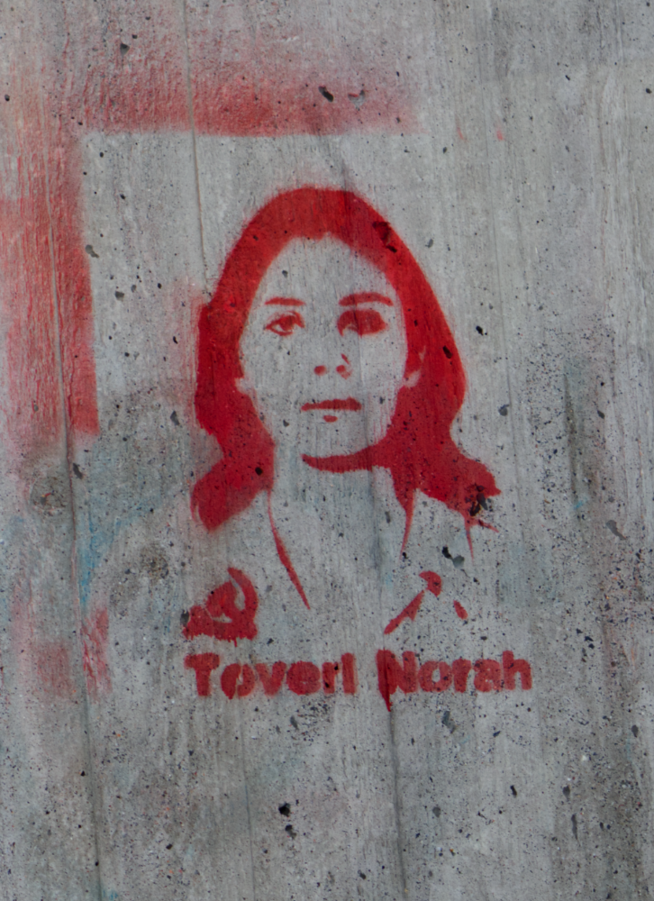

.jpg){kind=link}
{kind=link}
.jpg){kind=link}
.jpg) With Iranian women, against our imperialism
With Iranian women, against our imperialism 
[This lan. PDF][This lan. ODT][This lan. MD][This lan. TXT][This lan. TXT LIST]
Please select your language 请选择你的语言:
Author: redstar
Description: From MFPR Milano on March 8 we participated in a garrison of workers from the RSA "Blue Years" on strike for the first time, the N ...
Time: 2023-03-11T07:00:00+01:00
Images: ['IMG-20230308-WA0104%20(1).jpg', 'iran%20milano.jpg', 'loc%20iran_page-0001%20(1).jpg']
By MFPR Milan
On March 8, we participated in a garrison of workers from the RSA "Anniazzurri" on strike for the first time, our presence was so faring, we explained to the megaphone the difficult conditions of the women of women in general, but in particular the difficult conditions of the Alavetrics of health.
A harnessing work between the workers and the companions of the MFPR to persust them in expressing, to explain with their words the situation and Leloro requested. For this reason we thought of interviewing one of the Alavetors who explained the situation of exploitation and, not only, because it has also highlighted the fact of how they are worried about the sick people cannot be followed, but the profit is also made on their skin, with the care reduced to the bone, with bad food, etc.
Gly the interview
__
We talked about the assemblies that other workers organized Dalbasso, where the workers take the floor, as the Beretta workers have done.
We have underlined how important it is to keep connected, to join the health disaster, in particular in the sector of the care and assistance.
Then there was the connection with Monica of the Viterboche struggle committee explained the meaning of this day of struggle for us women, Chenon is only a question of gender, but of class struggle
Gly the registration
__
We can say that we have wrapped and involved them with our solidarity and the connecting appreciated.
Furthermore, to make more concrete and strong, and as for us women happen to connaturality, the unity among the workers in struggle was the solidarity connection with the workers of Trezzo on strike.
With Iranian women, against our imperialism
.jpg)
News Source: https://proletaricomunisti.blogspot.com/2023/03/pc-11-marzo-ancora-sull8-marzo-milano.html
Author: LuigiLerisVIVE
Description: In connection with the national demonstration in Crotone: just dead at sea we fight in each country to overthrow their imperialism ...
Time: 2023-03-11T10:09:00+01:00
Images: ['Polish_20230304_094214770.jpg']
 from the manifesto of the Communist Party of Marx and Engels
from the manifesto of the Communist Party of Marx and Engels
.... the workers have no home. They cannot be removed what they do not have. Since the first thing that the proletarian must do is to conquer himself political ladominium, to rise to national class, of constituting himself innation, it is also still national, albeit certainly not in the sense of the abergasia.
_The separations and national antagonisms of the peoples are to disappear more already with the development of the bourgeoisie, with the freedom of commerce, with the world market, with the uniformity of industrial production and of the coresion of existence conditions .__
_ The domain of the proletariat will make them disappear even more. One of the first assignments of his emancipation is the united action, at least of the villagers .__
_The exploitation of one nation by another is abolished in the top measure that the exploitation of one individual by another is abolished.
_ With the antagonism of the classes within the nations, the exposition of mutual hostility between the nations disappears ._
The manifesto of the Communist Party II. ECOMUNIST PROLERS
News Source: https://proletaricomunisti.blogspot.com/2023/03/pc-11-marzo-gli-operai-non-hanno-patria.html
Author: baronerosso
Description: Footballers bring a banner to the field for the deaths of Cutro: the referee fines the team and disqualify the captain for a month ...
Time: 2023-03-11T10:33:00+01:00
Images: ['brighela-768x768.jpg']
Footballers bring a banner to the field for the deaths of Cutro: the will the team and disqualify the captain for a month
 _di Lucia Landoni _
_di Lucia Landoni _
The Bergamasca third category team ASD Athletic Brighela brought Incampo before the whistle to start a sheet with the word "Cimiteromediterraneo. Just dead at sea". But the authorization had been denied. And IlCaso ends in parliament
Fined for bringing to the field a protest banner after Ilnaufragio Dicutro: the ASD Athletic Brighela , the Bergamasca third category football team, was to be imposed on a penalty of 550 euros from the sports judge of the Bergamo adaptation for the message "Mediterranean cemetery. Just dead inare", exhibited on a sheet White from their players before the whistle of the start of the match on Sunday 5 March against River Negrone, Disputatain moved to Scanzorosciate.
However, a position that had not been authorized by the referee and Orariscia to cost dearly to the Bergamo formation: as reported by the Eco Dibergamo, in addition to the fiddges to the company, the captainBut the sports judge did not welcome this externalization: "From the official tender documents supported by the relationship supplement, the captain of the company Ashletic Brighela, Mr. Pietro Rota, asked the race director of the race of Being authorized to aintroduce and exhibit a banner on the pitch, according to the not with a political content - he wrote - on the other hand, the Officer of Guaranton authorized the request ". However, a refusal that has not stopped Icalciators: the referee report reports that "after regularly entitled on the pitch, to the ASD Athletic Brighela captain the aforementioned banner from the members positioned on his own, not identified on the report by the referee".
At that point the banner "was exposed to the public for about twenty snacks by all the players of the aforementioned club, but not by those of the ASDRIVER Negrone, thus disregarding the indications of the race officer". The penalties were triggered, on which, however, the Athletic Brighela for now does not curtain: "Tonight we will have an assembly in which we will discuss the story, since we still miss some data - the company says - up to the Adara we will not make any declaration".
News Source: https://proletaricomunisti.blogspot.com/2023/03/11-marzo-giocatori-antirazzisti-al.html
Author: DEM VOLKE DIENEN
Time: 2023-03-11T11:54:47+00:00
Images: ['Februar_Uni_Malung_Mexiko_I.JPG']
Tags: ['Mexiko']
Category: None
 We share a call to a rally on Tuesday, the 21st m Arz - 7 p.m. - HH -Sternschanze, which has been sent to us .
We share a call to a rally on Tuesday, the 21st m Arz - 7 p.m. - HH -Sternschanze, which has been sent to us .
The Interocean Corridor Pl Undert and dead and deadly poor farmers and indigenous volers in Mexico!
The mega project of the CIIT is an over 100 year old plan that was revived with the help of the reactionary prasiders of the reactionary Mexican government, Andres Manuellopez Obrador, means for the people in the region - especially poor farmers and indigenous Volker - expulsion, loss of their country , which you have been building up for generations, poisoning of the environment in which you live, theft of the region of the lands of the region, terror by the state, hunger undelier - more exploitation and negative pressure.
Against this exploitation and negative pressure by the imperialist mega projects, a broad resistance in the Mexican people forms in the region and the region. However, the Mexican state tries to enforce the megal violence against the popular movements. This struggle in the communities of Rincon Tagolaba and Santa Cruz Tagolaba. The Mexican Navy has been stationed in the region since the end of January in order to pick up the population. Soldner gangs - especially the famous "Tacho" Canasta and his brother Sergio Gutierrez -Terrorized the pollution and want to capture the landerings of the communities of mentioned and enrich themselves. For this they take up to be pending terror, among other things they tear Hauser, sabotage the drinking water supply , fire shots from sharp weapons and plugs own the ownership of the population on fire. The Mexican state and his military, although already stationed in the region, watch in peace. If this violence against the popular movement is further escalated, it becomes a massacre with the population of the region come! End of the terror against the people in Mexico!
End with the imperialist mega projects on the ISTHMUS Vontehuantepec!
High the international solidarit at!
RALLY:
21 . M Doctrine / 7 p.m.
s Sternschanze / Hamburg
Bundnis against imperialist aggression
Marz 2023
Author: Tjen Folket Media
Description: Our comrades in the Communist Föringen in Sweden have published the following statement.
Publish Time: 2023-03-11T12:09:36+00:00
Modified Time: 2023-03-11T12:41:00+00:00
Images: ['Foto-5.png']
Tags: None
Category: 'Norden'
 *
*
Over for the thief the people the media of a contributing way.
The camera spring in the Communist Association in Sweden has published statements.
Publisher by Communist Association04.03.23
From the National Conference of the Communist conference, a red and living class greeting goes to the Communists, struggling and the revolutionary masses that under the Marxist-Leninist-Maoist parties are fighting and preparing for a war. The conference was held in the spirit to improve the embodiment of maoism and in the association's construction and in our practice.
The struggle for Maoism in Sweden has been long and has been going on for over 40 years. Communistic förening is the result of this struggle, and we understand the responsibility of spring to keep the tab of Maoism high in our part of the world. The situation isverigun; With increased oppression, economic crisis, inflation and deterioration of the proletariat. But from the Denational Conference, a great will is stated to meet these tasks; Founded to participate in the struggle and fights of the proletariat, as well as through these fortification as the guiding star of the Swedish Revolution.
We conclude by greeting the International Communist Association, the parties and organizations that make up the IKF. The fact that we have started working to end the communicators' long -standing fragmentation in order to achieve the one -world -wide unit instead is a brilliant development. KF is now moving forward to steps under Marxism-Leninism-Maoism's tabs, under IKF's tabs, for the Earn Conference Sweden's Communist Party, organizing, politicizing, the mobiles and eventually begins the Var of People. To rule the old state and build socialism until communism!
News Source: https://tjen-folket.no/index.php/2023/03/11/sverige-kommunistiska-foreningens-femte-nasjonale-konferanse/
Author: Tjen Folket Media
Description: Although British imperialism over and over again tries to paralyze the Irish people's freedom struggle and even tolerate a customs limit within its territory for this purpose, just to avoid a hard G…
Publish Time: 2023-03-11T12:31:22+00:00
Modified Time: 2023-03-11T12:40:19+00:00
Images: ['Foto-6.png']
Tags: None
Category: 'Europa'
 Image: A PSNI press spokesman holds a press conference on the case.
Image: A PSNI press spokesman holds a press conference on the case.
By a commentator for the Earn Folket Media.
Although British imperialism again and again tries to paralyze the Irish folk freedom struggle and even tolerate a customs boundary within its territory for this purpose, just to avoid a hard border between the Irish freestry and the British colony of Northern Ireland Armed actions performed by the Irish independence movement. This has been the case the last few months, with a number of armed actions in Northern Ireland against British Mquestism.
On the evening of February 22, there was an armed ambush on Johncaldwell, a higher British police investigator, in Omagh in the Tyrone district in Northern Ireland. What is specially made is that the policeman was not at work when the attack chain.
According to media outlets, two masked and armed men came to the policeman, who was about to wrap sports equipment into the trunk of his car. Den opened to him, after which the attackers must have fled in a car found hero burned some time later. The policeman has since been hospitalized, his condition is described as critical, but stable. A few days later the Republican army took(called "New IRA" by British media)Watch the responsibility for the attack on the policeman and said that there was a targeted attack on the only member of the British reaction.
The panic in the ranks of the British reaction was also reflected in the fact that a special bomb deposit unit from the British army was called out to Beragh, Tyrone district, February 25 for a suspicious and eye-falling condition. The forces blocked the area for three days, before announcing that what had found was airsoft weapons, ie toys for children. The weapons were placed a solidarity marchfor John caldwell i Beragh.These actions, on the one hand, show the vitality of the struggle for national liberation in Ireland and, on the other hand, the fear of intensification of the Kampeni British occupants' actions. The division of the British indoor market, as well as the deployment of a huge contingent of soldiers for clearing objects, shows how British imperialism is unable to field the situation in its own backyard.
Reference them VOLKE DIA: ARMED ACTIONS AGAST The Britishoccupation
News Source: https://tjen-folket.no/index.php/2023/03/11/irland-vaepna-aksjoner-mot-den-britiske-okkupasjonen/
Author: fannyhill
Description: Our commitment: to intensify the fight against our imperialism, its government, its assassin state the massacre in the Ionian Sea is ...
Time: 2023-03-11T12:39:00+01:00
Images: ['download.jpg']

Our commitment: to intensify the fight against our imperialism, Ilsuo Government, its murderer
The massacre in the Jonio Sea is yet another massacre that in recent years have been in the Mediterranean. The responsibilities of them have imperialism, as a system, as states and governments.
Italy is the first and last responsible for these deaths. The first because his seas that these deaths take place is from the ports of the countries of the other Mediterranean, first Libya today Tunisia, which the migrantiparts, after the unwatchable suffering in the concentration camps, even if the massacre brought migrants from others areas, by other streets. The regimids are these countries in league with the Italian imperialist government, which for some time established agreements that produce these travels and these deaths, and communicually show Meloni's travels(to which the owners are joined to the Eni), Children, women, migrants are used as a commodity of the discmarket to do business in these countries, profits for capitalists! In the time of Italy, Italy is the last of the chain of the imperialistonial system that produces war, repression, misery and death Which brings manyprotes and popular masses to escape when it is impossible to struggle to exopravive.
It will not be possible to put an end to this infinite massacre without putting the capitalist, imperialist system. Nor will it be possible to travel another way in these countries that is not the escape without a development of the Revolutionary struggle of mass of the proletarians and populations against Iloro regimi and the imperialism that supports them. Currently the Mediterranean and in it the Ionian are furrowed by the navidell' imperialism with weapons that cost billions; ships that do not save human life but lead maneuvers and train on military missions that only two purposes only two goals: prepare to participate in the imperialist war march with forced stages and support the regimes asserted or placed in thetex part of their masters in international dispute.
Thus accentuating all the economic and social conditions that produce migration bonds and the horrid chain that has ended in recent days on the Costadi Cutro.
Imperialist Italy, from Bossi/Fino to the last miserable Governomeloni/Piantedo, makes laws and actions all aimed at non -rescue, alreuspiece, to the support of the coastal guards of the countries from which I came migrants, to make the first trenches not of the rescue but of the hires. Also the last decree, thrown in the face of the dead and their family, has the same sign : an unnecessary repression is snorted, as much emptower towards the smugglers, but in the center there is always the blocking of migrants, of which they can Enter only the "strong, healthy" ones to be exploited by the Daipadron. Meanwhile, the massacre of Cutro, like the others, risks being imposed, to cover criminal behaviors of the ministers and of all ilgoverno, which seen together is even possible to define as "genocides", expressions of an imperialist neo -colonial, racist imperialist logic, that Government has reached and exceeded a new limit, now denounced by many, in Cutro as nationally.
We are because the responsibilities of this last massacre are brought light from all forms of investigation and testimonies already in progress; Also at this bourgeois state we want the liability to be sanctioned. And we are because the ministers of this government and the Lorocapa, Meloni, for this massacre also pay a political cost. And it is explorely just that in the face of the latter massacre that touches the hearts and that sees in these days a great Solidarity at all levels part of the masses of the Crotonese, this national emanifestation in Cutro was organized, which sets a brake and questioning this government, of these ministers.11.3.23
Communist proletarians/PCM
News Source: https://proletaricomunisti.blogspot.com/2023/03/pc-11-marzo-cutro-delegazione-di.html
Author: fannyhill
Description: Revolutionary proletarian feminism
Time: 2023-03-11T13:09:00+01:00
Images: ['download.jpg']

News Source: https://femminismorivoluzionario.blogspot.com/2023/03/oggi-alla-manifestazione-cutro-anche.html
Author: Verein der Neuen Demokratie
Description: Numerous meetings took place in Hamburg on March 8, by far the largest demonstration had a few thousand participants. Here took ...
Time: 2023-03-11T14:43:00+01:00
Images: ['Hamburg_8._M%C3%A4rz_2023-Rotes_Frauenkomitee_Hamburg-1.jpg', 'Hamburg_8._M%C3%A4rz_2023-Rotes_Frauenkomitee_Hamburg-2.jpg']
 Numerous meetings took place in Hamburg on March 8, the largest demonstration had a few thousand participants. Here, a contingent of the Red Women's Committee Hamburg also took part in the first third of the demonstration, it was borne by a transparent with the slogans: “Women fight and fend off: against imperialism and patriarchy!Against the wave of inflation and militarism!"Beared.
Numerous meetings took place in Hamburg on March 8, the largest demonstration had a few thousand participants. Here, a contingent of the Red Women's Committee Hamburg also took part in the first third of the demonstration, it was borne by a transparent with the slogans: “Women fight and fend off: against imperialism and patriarchy!Against the wave of inflation and militarism!"Beared.
In addition, hundreds of leaflets of the Red Women's Committee - FRG for this year were distributed March 8 and loudly tuned slogans, which were found in a dividing demonstration. Even if in this demonstration it was not the proletarian color of feminism, but others, but still a combative atmosphere on the great demonstration, which showed that the crowds of women are increasingly and more active in the political fight and ultimately increasing the growth of the proletarian women's movement.
 Written by Refa 09 . March 2023
Written by Refa 09 . March 2023
HamburgInternational FrauenkampftagAntimilitaries
News Source: https://vnd-peru.blogspot.com/2023/03/8-marz-2023-in-hamburg.html
Author: fannyhill
Description: None
Time: 2023-03-11T17:48:00+01:00
Images: []
News Source: https://proletaricomunisti.blogspot.com/2023/03/pc-11-marzo-prime-immagini-da-cutro.html
Author: fannyhill
Description: We report the first part of a long article that appeared on Le Monde Diplomatique in February on the situation in Israel who is giving life to ...
Time: 2023-03-11T18:58:00+01:00
Images: ['download.jpg']
 We report the first part of a long article that appeared on Le MondadiPlomatique in February on the situation in Israel who is giving life in this days to strong and great protests of the population
We report the first part of a long article that appeared on Le MondadiPlomatique in February on the situation in Israel who is giving life in this days to strong and great protests of the population
This first part explains well the passages of the action of Netanyahu of decision -free to the far right, consequently bringing its dicancellation plan of any residual form of democracy and the establishment of unregime based on Jewish nationalism.
Netanyahu was in Italy yesterday, received by Meloni, to tighten political and economic and economic, and also here he was welcomed by protest manifestationides.
This report Israel/Italy acquires at this stage a meaning that vaulter the "normal" relationships between states and governments. Netanyhu in a certain sense of the Meloni/Salvini government in Italy, regarding constitutional contractor, the establishment of a presidentialism, the accentralization of powers; But in particular, anticipates the attack on agustice that Min. Nordio has just begun to start, but that he also aims to a mass under control, remove autonomy from the judiciary, modify articles and procedures, which safeguard the alpower political class, saving his men from convictions for corruption, fraud, etc.
In this sense Netanyahu is closer to Italy than it may seem.
================================
Movement marked towards the far right
Israel, the identity coup
_ By priority to the political reforms requested by his allying and ultra -tenant, Benjamin Netanyahu is embarking on an expansion of the transformation of Israeli democracy. The powers of the courtesupy but also those of the judges are in the sights of a coalition that extending the influence of religion in public education and doing nothing to the Palestinians ._
by Carlo EnderlinNetanyahu has entrusted the mission of transforming the judicial system Alsignor Yariv Levin, jurist and deputy, who, from his election in the Likud list in 2009, led the office against the judges. On January 4, just appointed Minister of Justice, he presented his project of "radical revision" based on the principle that the "people" recognizes to the heating elected the legitimacy to govern alone, without the interference magistrates. not appointed by the polls. A so -called "bypass" clause will thus allow sixty -one deputies to cancel a sentence of the supremacorte that considers a law unconstitutional. _ "A text voted by the Knessetnon can more be canceled by a judge" _, insists Mr. Levin.inoltre, the collective appointment of the members of the Supreme Court should pass the control of the majority in power. Other measures are foreseen, such as the rewriting of some articles of the criminal code, in order to dirride the number of referrals for corruption within the class, class. Theoretically, Netanyahu can find himself named the judges who will appeal his appeal if he closes with a condemnail trial for fraud, abuse of power and corruption currently in his corso -control.
News Source: https://proletaricomunisti.blogspot.com/2023/03/pc-11-marzo-i-piani-di-spostamento.html
Author: ΚΚΕ(μ-λ)
Time: 2023-03-11T87:00:00-04:00
Description: The perception that blames the private and sanctifies the state has its root in the reformist view that the state is a field of class struggle and not an instrument of capital for its sovereignty in the working class and the people.
Images: ['health-coronavirus.jpg']
Type: article
 Amidst all the stench of systemic policy that was washed out of the Tempe in Tempi, the issue of their privatization and consequences came to the fore. In an interview with Open, when TukKE MP L. Kanellis is asked: "But do you condemn privatizations while the State has been in maintenance?" He has to confess "yes but the State also acts as a private." So why is this ass? Why does the people need, when they are opposed to privatization, at the same time a state -owned state system with any conditions at all times the KKE and other reformists do? Did OSE employees have to judge their labor rights or a transport system?
Amidst all the stench of systemic policy that was washed out of the Tempe in Tempi, the issue of their privatization and consequences came to the fore. In an interview with Open, when TukKE MP L. Kanellis is asked: "But do you condemn privatizations while the State has been in maintenance?" He has to confess "yes but the State also acts as a private." So why is this ass? Why does the people need, when they are opposed to privatization, at the same time a state -owned state system with any conditions at all times the KKE and other reformists do? Did OSE employees have to judge their labor rights or a transport system?
In the field of care, accordingly, the logic of the "defense of the NHS", as a system, is a common place of all reformists but also at times and systemic forces. In the name of the Salvation of the NHS during the During the Depositure, labor rights were slaughtered and the lives of the people were sacrificed. As a continuation, "in order to withstand the NHS", the private sector was almost preceded. Instead of claiming hiring staff and opening hospitals and clinics, employees, according to the restraints, had to make a proposal to the system for how it was mounted. And when the government, just to promote anti -populist attacks, it also used the private sector, then blonded columns.
The perception that blames the private and sanctifies the state has the root in the reformist view that the state is a field of class struggle and not the capital of capital for its sovereignty in the working class and the people. It is a product of the view of class peace, where the parties that parties that A reporting people can negotiate with capital a more pro -state state. This results in the thoughtful and angular plans for the health system, the transport, and even the minimum wage that the system must at last listen and implement. Such is the "escalations" of TUKKE with the proposals of law in the House.Privatization is one and not the only one of the forms affected by people and workers. The opposition of the workers is based on their rights and does not imply the defense of a tourist model. So does it make sense for their employees to denounce the contractors, the PPPs, the conversion of the NPIDs or the necessary struggle for the role of the role of the state?
In class struggle, each request has a specific place and time. Who is right from whom it is and to whom it is addressed. In what field is it implemented and how it is estimated. As far as us is concerned, the class struggle is relentless in terms of confrontation. The negative correlation of power for the forces is recorded daily and the task of reconstruction of the Laboratory People's Revolutionary Movement is put in every workplace, a neighborhood. Even if this concerns the composition of the smallest outbreak.
Employees of care, when they are fighting against the contractors, defend the permanent and stable work still exists in the public and renounces the low wages and arbitrariness of the contractor. Intention to convert tannoses into NPIs, because with this vehicle they bring the end of the permanence and a series of rights. In each battle, workers owe the labor and popular rights against any form of attacking the system in this situation. What dissolves the dreamers is the struggle itself. Proposals and models are necessarily leading people to entrust the jurisdiction, while the struggle for rights to take over.The intensity of the attack at the same time reveals. Like the oxygen of the massives, it dissolves the reformist from the revolutionary line. The people has been carved with such mass in recent days and because it lives and is living in the same circumstances in the same circumstances that they gave birth to the crime in Tempi. Each workplace, highlighting both the particular issues and a tangible nature of the anti -labor and anti -populist attack, to fight through general meetings for new mobilizations that will target the system of the system, which puts us all daily in "death wagons".
News Source: https://www.kkeml.gr/ps936/nosokomeia/
Author: ΚΚΕ(μ-λ)
Time: 2023-03-11T89:00:00-04:00
Description: The game of impressions about the - thick - increase in the minimum wage continues unstoppable. The government for some time now in the context of pre -election promises, trying to create a climate « benefits » And at the same time clearly pressured by developments in the field of increases and inflation, it has thrown the paper on the table of the minimum wage.
Images: ['ftwhia3.jpg']
Type: article
 The game of impressions about the - self -sacrificing - increase in the minimum wage is unmistakable. The government for some time now in the context of preliminary promises, trying to create a climate of "benefits" and clearly pressured by developments in the field of growth and alertation, has thrown the paper on the table.
The game of impressions about the - self -sacrificing - increase in the minimum wage is unmistakable. The government for some time now in the context of preliminary promises, trying to create a climate of "benefits" and clearly pressured by developments in the field of growth and alertation, has thrown the paper on the table.
The numbers left to leak to the media are about 5-8%, that is, in absolute numbers they speak for 35 to 57 euros gross. The government is trying to create a fabulous image of social policy and supplies, while the increases in basic species exceed20%. They think that the policy of alms, with the various "passs", with the "housewife basket" and more. They can mitigate the indignation of the popular people in front of the huge pressures they receive.
The harsh reality speaks for itself. It is a given that its salary and tuapos is a relative size directly related to the purchasing of dysfunction, that is, the relationship with the prices of the products, and in particular those that discharge the basic needs. When, due to the crisis and the war, inflation is announced for 2022 of 10%, it means that wage value is significantly reduced with huge consequences for a family. It should be taken into account that inflation is a price whose average results from the increases of products, but not a burden that really corresponds to the basics for a worker family. For example, dairy increased 23%, 19%, meats18.6%, cereals 18.6%, gas 34.7%.
It is obvious that the increases proposed are far from popular needs and in fact are not increases, but poverty management and poverty that expands melting rhythms. All this in a working environment that, especially for employees who are paid the minimum wage, is reminiscent of a real cats. Elastic working relationships are dominant, employer terrorism is bones, and it is no coincidence that the most serious working "accidents" happen where the pressure on the wage overflows.The results of this year's consultation are contributing and promoting a Togenetic narrative for "increases" crumbs below the poverty line. In this process, except for employers(Sev, SETE, IOBE, Bank of Greece)Playing the role of "the bad cop" suggests increases of 3-5%, and the GSEE has participated with a 15.8%growth proposal. Hollow numbers knowing that it will continue to be built in every effort to substantial and from the lower collective surgery in wages and work with rights. SYRIZA moves in the same direction of cucumbers and pre -election take -off rates, "forgetting" the anti -labor route it has gone as a government, "forgetting" the absolute divorce it has taken from the collective surgery, it promises 800 euros.
In fact, salaries are purely a matter of struggle and collective claims of the workers themselves through the bodies of fighting. It is a struggle that must be linked to the claim of collective work and the long route for their recovery. Fantastic unions and trade unions must intensify and exacerbate the confrontation with the employer. They have to create collective terms of claiming a request that is already once and individually from a multitude of workers as the only way out of a huge increase in life costs.
It seems that the government, by continuing impressions, has linked the announcement of the final height of the increase and the start of its implementation the announcement of the date of the elections. However, the crime in Tempi, and especially the manifest anger and indignation that overflows with the popular masses and youth, who are looking for and finding the street with massives, have already created huge pressure on all urban policies and government policies. Despite the delays, whatever the final announcement is reselling, it is a given that it cannot be changed and the anti -populist nature of government intentions.
News Source: https://www.kkeml.gr/ps936/katotatos/
Author: ΚΚΕ(μ-λ)
Time: 2023-03-11T91:00:00-04:00
Description: As the generational decision (under junta) set up to create OSE in 1971, the Greek State managed the rail network and was responsible for the maintenance and investment of modernization that would emerge in the long run. This was essentially not adhered to, both by the junta itself and by the governments of the Transfiguration.
Images: ['trainose-trenitalia.jpg']
Type: article
 As the generative decision set(overflow)For the creation of OSE in 1971, the Greek State managed the rail network and was responsible for the maintenance and modernization investment that would result in time.
As the generative decision set(overflow)For the creation of OSE in 1971, the Greek State managed the rail network and was responsible for the maintenance and modernization investment that would result in time.
The withdrawal of the State
This was essentially not adhered to, both by the junta itself and by the governments of the Transfiguration. As it is written in a relatively-subject to the Graduate of the Organization in 2010, the state defied the obligation to the Organization for years. In essence, he forced him to borrow for the maintenance projects and his(any)Modernization of the Network with the State coverage of the State. With that of a toddler, the hidden debt of about $ 10 billion.(To be precise 8.9 billion then)TOUSE, which was so talk about and so many were written and made along the way(Multiplication of OSE, Transition, Reduction of Personnel and Routes, etc.)It was the creation of this state default, which could guarantee loans on the one hand, on the other hand loaded them(Of course with their interest)In the.
It was also similar to OSE to run routes - and rightly in view - in the "barren lines"(lines, that is, they did not make the costs due to limited ticket cutting)as a "public service obligation". These routes, about 170 in number, cost - then - 140 million euros.
It could, of course, oppose that OSE as a DEKO, as a business that was surrounded by what is called and allegedly "public interest" even in capitalism, would have to offer the social good of transfers to citizens of these parts of the country. But the attacking system in the social conquests that broke after '89 was led to such "irrational".
Pressure, therefore, could be argued that all these deficits were "left" not only to exist but also ... to be fired, in order to come to the moment the "resolution" that would deal with ... "pathogens".
The season of private -economic criteria We would say that Greek capitalism, dependent on form, chose - in the light of governments - the "failed" example of privatization from Britain(was later corrected by Blair after rapidly increasing accidents), that privatized and dispersed the route of infrastructure(beyond the trains).
Δεν επέλεξε το αντίστοιχο γερμανικό, γαλλικό ή ιταλικό παράδειγμα, το οποίοδιατηρούσε σε ενιαίο οργανισμό τις σιδηροδρομικές υποδομές, δηλαδή το δίκτυοκαι που με ευθύνη του -ιμπεριαλιστικού- κράτους, του ισχυρού δηλαδή«συλλογικού καπιταλιστή», θα παρέμενε στη δική του οικονομική «αρμοδιότητα».
Στην εξέλιξή του, ο εξαρτημένος ελληνικός καπιταλισμός… απογείωσε, βέβαια, τοβρετανικό παράδειγμα, φτάνοντας στο σημείο να πολυδιασπάσει σε κομμάτια όχιμόνο τον κυρίως Οργανισμό (five the number in the Samarra period), but in the career and contractors and subcontractors who would undertake the electoring-reflectorization of smaller tracks on the network(As it was written, five such contractor companies were sharing… modernizing the network between Lamia-Athens!).
Πάντως, ο εκσυγχρονισμός του δικτύου και τα «γρήγορα τρένα» διόλου τυχαίαταυτίστηκαν μεταξύ τους από την κυρίαρχη προπαγάνδα που οδηγούσε στηνιδιωτικοποίηση του ΟΣΕ. Σύμφωνα με τα στοιχεία που παρουσίασε πάλι τοεπιστημονικό προσωπικό του ΟΣΕ, οι επιχορηγήσεις του Δημοσίου από το 2002 έωςτο 2009 υπολείπονται κατά 770 εκατ. ευρώ όσων κρίνονταν αναγκαίες για τηνυλοποίηση συγχρηματοδοτούμενων μεγάλων έργων.
Το 2005, επί κυβερνήσεως Κώστα Καραμανλή, ο ΟΣΕ χωρίζεται σε δύο εταιρείεςυποδομής και εκμετάλλευσης, ενώ οι ύψους 4,5 δισ. ευρώ ζημίες του χρεώθηκανστον κρατικό προϋπολογισμό. Οι δύο εταιρείες ήταν η ΕΔΙΣΥ AE (National manager), which received a "dowry" of 150 million euros and ITRAINOSE SA, which was given a capital of 100m euros along with the responsibility for the renewal of passenger and commercial routes.
Memorandums
It is these two grants that will "chase" the governments of the European Imperialists with the threat of syllabus of European courts. By limiting these obligations, SYRIZA in 2017 will triumph that it has finally implemented the sale of OSE to Italians, a company in the Italian State!In fact, OSE, as well as when, were privatized by companies of Italian and German state -owned companies respectively!The New Democracy government, with Prime Minister Karamanlis- "social liberalism"-, Minister of Transportation Hatzigakis Kaikinos, today's prime minister- of the wilderness- is fighting the "battle" of privatization. Then a railway accident in Bralos(derailment with 16 injured)It provides a perfect occasion for the announcement of "resolution". But they lose the elections. They leave, of course, a… balance of modernization of the network with contracts that have been written(and have already been overcome as incompatible with today's technological developments)Like-as to do some elementary fusion projects, linked to the event of the Olympics!
George Papandreou's government comes determined to proceed with a resolution, transferring OSE obligations to state -budget and in return the State receives all the real estate agency(to deposit it to the lenders in order to revive public debt in general). Στο νομοσχέδιο προβλεπόταν ηπώληση του 49% της ΤΡΑΙΝΟΣΕ, δηλαδή των συρμών και αμαξοστοιχιών, μεταυτόχρονη εκχώρηση του μάνατζμεντ της εταιρείας σε ιδιώτες!
Όταν ο Σαμαράς παρέλαβε τη σκυτάλη, επεδίωξε να είναι αυτός που θα υλοποιούσετο έργο της εκχώρησης, χωρίς να υπάρχει συγκεκριμένη μνημονιακή υποχρέωση γι'αυτό και στο πλαίσιο της λογικής «οικειοποίησης» των μνημονίων που είχεαρχίσει να διαμορφώνεται τότε!Το σιδηροδρομικό δίκτυο θα παρέμενε υπό δημόσιοέλεγχο. Όμως τους έμεινε στα χέρια ο εκσυγχρονισμός του. Τότε (2014)It was also the famous Convention 717.
The project was not implemented, but in the meantime it was first deforested by working with jobs with the mass shifts that followed and the route cuts(This is the real offer of government).
Ποιος, φυσικά, θα το περίμενε ότι η υλοποίηση της εκχώρησης και τηςπαραχώρησης της χρήσης των δικτύων στους Ιταλούς θα έπεφτε στον ΣΥΡΙΖΑ, πουδεν αντέδρασε διόλου ως ο… μουντζούρης του παιχνιδιού. Αντίθετα, οργάνωσε τοσόου του ταξιδιού από την Κατερίνη στη Θεσσαλονίκη σε ένα τέταρτο με τουπερσύγχρονο «Ασημένιο Βέλος» (that we have never met again).
Το 2017, επί κυβέρνησης ΣΥΡΙΖΑ-ΑΝΕΛ, η ΤΡΑΙΝΟΣΕ ξεπουλήθηκε από το ΤΑΙΠΕΔ στη«Ferroviedello Stato Italiane» έναντι του εξευτελιστικού τιμήματος των 45εκατομμυρίων ευρώ.
OSE's debt(14.3 billion euros)added to state debt. And the 50 million stubbornness that stubbornly denied the Greek State gave the "his" organization for the barren lines, they would be given!The staff were reduced, employees were transferred to other positions. The -state -Italian monopoly gave 45 million and took the network, while the State was loaded a cost that reached $ 16 billion!
The truly lethal "mudzouris"
In essence, the Mitsotakis government would say that it has pressed this assignment and even legally fortified the former TRAINOSE and now Hellenictrains, with its exclusion from the payment of damages in the event of accidents!times in her own "space", she escalated her -political received.
"Mountzouris" was just allowed to sow death ...
With the interlocutors ... firing between subcontractors, the retirement of the contracting, etc., the big stake for which the privatization was supposed to be supposed to be the modernization of the network, continued to be pending a pending - as it turned out -!
In any case, and with every governance, the civil bourgeoisie policy has addressed the issue of OSE as a field of political subordination and decorating with the general anti -populist plans, whether they were exaggerated or had to "do it". From this process they were paid and won "days of contractors" and intermediaries of the system of power and not only. The alleged - however - privatization in question is followed by a real issue. This is not just a financial issue!
DT
News Source: https://www.kkeml.gr/ps936/tempi-ose/
Author: Philippine Revolution Web Central
Publish Time: 2023-03-11T92:00:00-04:00
Modified Time: None
Description: Friends of the Filipino People In Struggle (FFPS) called on March 6 to launch a global coordinated campaign to feature the National Democratic Front of the Philippines (N
Images: ['ffps-friends-of-the-filipino-people-in-struggle-1024x577.png']
Categories: ['International', "People's Struggles"]
Type: article
 Friends of the Filipino People in Struggle 6 called on March 6(FFPS)to launch a global coordinated campaign to feature the National Democratic Front of the Philippines(Ndfp)and the advocacy of the Filipino people's struggle in connection with its upcoming Giintursary on April 24.
Friends of the Filipino People in Struggle 6 called on March 6(FFPS)to launch a global coordinated campaign to feature the National Democratic Front of the Philippines(Ndfp)and the advocacy of the Filipino people's struggle in connection with its upcoming Giintursary on April 24.
According to the FFPS, it wants to overcome "the NDFP's" representation of the Filipino people, and the importance of the Filipino people's struggle to justify and lasting peace through the national and decocratic revolution. " Here, the campaign will last one year April 2024.
The group shared in their calling the crisis of the Filipino people and their only alternative to eliminating the crisis of semicolonial and vulnerable Philippine society. Here, "the increasing exploitation and intensifying oppression ... in the Philippines is the foundation for the resistance of the Filipino people."
They stand, "the NDFP and its allied revolutionary forces and many martyrs of the people's movement, launch 50 people of brave and militant struggle."
The FFPS has called on all its members to unite in the campaign, implement activities, and unite other organizations according to it. According to them, discussions and studies are related to the national-democratic struggle, propagate the NDFP newspapers, make brochures, launch mass actions and go to the Philippines for exposure activities.
The group is also pushing for the removal of the NDFP, the Communist Party of the Philippines, the New People's Army and progressive personnel on the list of so -called "terrorists" of the reactionary government in the Philippines.
FFPS is a global organization that supports the national-democratic movement in the Philippines. It has organizations from North America, Europe, Asia and Oceania.
News Source: https://philippinerevolution.nu/angbayan/pandaigdigang-pagdiriwang-sa-ginintuang-anibersaryo-ng-ndfp-binabalak/
Author: Philippine Revolution Web Central
Publish Time: 2023-03-11T93:00:00-04:00
Modified Time: None
Description: The United Nations (UN) Committee Onthe Elimination of Discrimination Against Women (CEDAW) has criticized the Philippine government in its failure to give justice and help ' comfort wo
Images: ['gabriela-photo-lila-pilipina-justice-for-comfort-women-1024x559.jpg']
Categories: ['Human Rights', 'Women']
Type: article
 The United Nations has been criticized(AND)Committee on the Elimination of Discrimination Against Women(CEDAW)The Philippine government of its failure to provide for the 'comfort women' who were victims of Japanese rapes when they conquered the Philippines. UN-Cedaway statement released on March 8.
The United Nations has been criticized(AND)Committee on the Elimination of Discrimination Against Women(CEDAW)The Philippine government of its failure to provide for the 'comfort women' who were victims of Japanese rapes when they conquered the Philippines. UN-Cedaway statement released on March 8.
According to the committee, the Philippines has erased the right to give up on female victims of rape in signing the Treaty ofPeace in Japan. In addition, the country did not address the institutional sexual riot system during the war, the victims of the victims and survivors, or at least providing their protection.
In a statement by Gabriela Women's Party, it said that "a mayor and serious accusation of the Philippine government [the UN statement] in continuing to help help Filipino comfort women in their struggle for justice, human dignity, and a second-time fee to the -The terrible crimes committed by the Japanese Imperial Army. "
Comparing the UN Committee, "Veterans of War, Most Man, receive special and unique treatments from Saguberyno, such as education, health, health, old age, disability and passing pensions."
According to the UN Committee, it is clear that the Philippine government has a break from the CEDAW convention. The comment further emphasized that the country is "failing to implement appropriate initiatives and others to ban all discrimination against women, and protect women's rights with fairness to men."
This decision of the committee was considered by the Gabriela Women's Party as a "Hope of Hope" for grandparents as it serves as a stepping of concrete actions from the government.
The UN Committee insisted that grandparents should be given the paid, including the material compensation and issuing an official apology to the ongoing disaster.
"The Marcosjr administration should issue an official apology," Gabriela Women's Party said. The group also supported the resistance of grandparents for the appropriate configration and assistance from the government.
Author: ΚΚΕ(μ-λ)
Time: 2023-03-11T93:00:00-04:00
Description: It was a crime and not an accident!A crime that has been prescribed for years by the policy of all the governments of the system, which faithfully served the interests of the predators of the local and foreign capital, with the blessings and resignations of the EU.
Images: ['8-μάρτη-θεσσαλονίκη.jpg']
Type: article
 It was a crime and not an accident!A crime prescribed by the policy of all governments of the system here, which served the tunes of the predators of the local and foreign capital, with the blessings and resignations of the EU.
It was a crime and not an accident!A crime prescribed by the policy of all governments of the system here, which served the tunes of the predators of the local and foreign capital, with the blessings and resignations of the EU.
Decades ago, by the "problematic" of Papandrei PASOK, the narrative of the harmful public companies and the organisms that had to be erected ... through privatization ... not by accident, was accompanied by the first attempts at the first.
In the years that followed, especially by the governance of Father Mitsotakis and then, privatization became a central political choice of all ND and PASOK converts that alternated in power. Loving funding and entire sectors of the economy were plundered and sold in a local and foreign capital, while only debts were left in the public, which were burdened on the backs of the people. This policy reached its peak of the Memorandum Stagnonia, so the administrators of power were added and Osyrias and the imperialist-lentilists demanded the infamous Form Track processes, with which the sale was completed overnight ...
The policy of privatization was the result of the deep crisis of a shock and its expression in a dependent country like ours. The main European, as well as the American capital, literally applied Schora and sought two things: the highest possible profit, but also the control of strategic sectors of the economy for their more general- not economical- benefit. The control of the country's political staff allowed them to secure favorable legislation, privileged tax arrangements and, of course, crushing the rights of employees. All of this, the Greek girlfriends called them "Creation of a favorable investment environment" and were renounced for every new robbery contract they signed.In addition to the rights of employees who are abolished one by one, the predictions have another result: the total retardation of the country. The largest privatizations concern areas of basic services and infrastructure, such as energy, telecommunications, transport and more. The owners only look at their pockets and do not care about their product is essential for life itself. They will never make an investment to serve the needs of the world unless they are more profitable. The benefits of healthy competition and self -regulation of free market are hollow words that, in essence, hidden nonsense of capital to do whatever it wants to secure the maximum.
Thus, a number of basic goods, in addition to being expensive, are offered a major and worse quality, because quality means costs that no one, not even the State, does not want to take over.
Safety also means cost. The crime in Tempi was the tragic and tragic proof that this cost of no one wanted, nor does he want to take it. And not just on the railways. Everywhere. In every area that has been pronounced in the undefeated predators of capital, either privatized or not.
So those responsible for the crime have a name. They are the businessmen in and out of the country, which speculate at the expense of our own life. They are the governments that, all of all, served the interests in the most decisive way. Who were handed over to the Greek -economy fillets for crumbs. Who have legislated to facilitate their risk and at the same time to reset their obligations and responsibilities. Who were scandalously given to them, but also to themselves legalism, to protect them even from their own civil justice. And who, of course, abolished any labor rights, cut salaries of wages, made union and union, unlawful, They have generously arranged the repressive forces to mourn every labor and alert.All of these real responsible people do not expect to be named staples of the committees of experts and prosecutors. We desert the system to judge himself. Those are already in charge of the streets by the thousands of protesters. As for the punishment, in fact this can only be their overthrow!
News Source: https://www.kkeml.gr/ps936/tempi-politiko/
Author: Philippine Revolution Web Central
Publish Time: 2023-03-11T94:00:00-04:00
Modified Time: None
Description: The Ateneo Employees and Workers Union (AEWU) has been in a hurry for a strike after Ateneo de Manila University workers and employees voted in favor of the strike on March 10. recorded by
Images: ['the-guidon-strike-vote-admu-union-1024x576.jpg']
Categories: ['Workers']
Type: article
 Ateneo Employees and Workers Union are already(Festus)For a welter, Ateneo Demanila University workers and employees voted in favor of the strike on March 10. The union recorded the 201 'oo'y 4 no' vote. '
Ateneo Employees and Workers Union are already(Festus)For a welter, Ateneo Demanila University workers and employees voted in favor of the strike on March 10. The union recorded the 201 'oo'y 4 no' vote. '
Voting for the strike was conducted after led to two deadlock talks between the University administration and the Union on the Collective Bargaining Agreement(CBA)of the union for 2019 to 2024.
The formal start of the union strike begins in the final week of March as it takes a 7-10-day cooling-off period since serving their notice of strike on February 15, 2023.
Some of the union's insistence on reneglusion are their right wages, signing bonuses, rice allowance, dependent's allowance, and atfamily subsidies. It is estimated to reach ₱ 13.27 million.
The university administration is pushing for only ₱ 5.54M provides extra benefits to employees.
The union leadership also insisted that they be provided with a 70%of the university's tuition increase.
The union is set to launch a gathering and the \ #standwithaewu campaign next March 17 to encourage sectors within the university to unite with their demands.
News Source: https://philippinerevolution.nu/angbayan/unyon-sa-ateneo-de-manila-university-bumoto-pabor-sa-pagwewelga/
Author: ΚΚΕ(μ-λ)
Time: 2023-03-11T95:00:00-04:00
Description: While in the background, efforts that would lead to some even temporary respite continues, the two sides of the imperialist conflict in Ukraine, the US-Nato and Russia, are determined to have a constant and increasingly dangerous escalation of the war. That is why any prediction or assessment of the duration, outcome and range of this conflict becomes risky.
Images: ['ουκρανι-α.jpg']
Type: article
 While in the background, efforts that would lead to some and temporary respite continue, the two sides of the imperialist conflict Ukraine, the US-Nato and Russia, are determined to have a constant and more dangerous escalation of the war. Therefore, any prediction or estimate of the duration, outcome, and the scope of this conflict.
While in the background, efforts that would lead to some and temporary respite continue, the two sides of the imperialist conflict Ukraine, the US-Nato and Russia, are determined to have a constant and more dangerous escalation of the war. Therefore, any prediction or estimate of the duration, outcome, and the scope of this conflict.
War scaling and arrangement scenarios
In the meantime, the conflict raises rhythms. The US announces repeated "packages" of military support, with their overall contribution to Kiev's allocated equipment reaching $ 32 billion in the US and European imperialist countries discussing and taking measures to make their own industry to cope with any kind of consumption. Ukrainian plains. Although the tanks mission is slowing a series of problems and difficulties, not just technical but cultural nature, the debate on sending militant men to Kiev has already opened. It is a decision that, if taken and trusted to be implemented, will echo the danger of the conflict. Indicatively, Medvedev said that if Poland is supplying in Kiev, it is directly involved in the war and becoming a legal goal.
On the other hand, Russia is increasingly constituting its war industry and announces the acceleration of the mass production of the advanced weapons systems it has built in the last few years, with the peak of large -scale ultrasound. On the occasion of the suspension of Russia's compliance with the New Start Treaty on nuclear, the debate on changing the Russian nuclear doctrine, which Putin himself had in last period. This change will allow Russia's leadership a preventive nuclear blow if it considers that the country is threatened. It should be noted that the US has adopted it for years ... The war front and the importance of Bakkhmut
In terms of war conflicts in Ukrainian steppes, everyone's eyes have turned to Bakkhmut and its importance to the counter -legged. As these lines are written, the Russian forces have understood the eastern Bakkhmut, while overall they hold 50% of the wider area. They have managed to surround the city operationally and the only highway is now in the range of a Turkish artillery. As a result, the Ukrainian troops are increasing day on the day of the day, which number about thousands and either their extermination or their surrender. Buckmith for the Ukrainian Terrace is four hours.
Beyond the existing significant impact that Buckmut's occupation of Russia would have on the morale of Ukrainian brands, after five months of battles, there are even more important aspects that highlight the convenience of its occupation. Bakkhmut is a critical social hub. Motorways and railways passing through it have significant support that allows for seamless transportation and supplies across the front line. In addition, Kiene has sacrificed there many of the selectors and more ready -made forces, as well as a multitude of reserves or troops that have taken away from Zaporizie and Harkovos, with the consequence of having overall slimming potential of his military. The Russian forces are already commemorating a series of successes both in the area of Harcovo and near the city of Krasni Liman, who held up to the Ukrainian counterattack of September. The last but not lasting importance is that, from Cathedral, from Bakkhmut to the last DONBAS Fortification of Constantinova-Kramatorsk-Slaviansk, there is no remarkable and capable of making the advance of the Russian forces.
hot perimeter In early March, US Foreign Minister Anthony Blinken visited Kazakhstan and Uzbekistan and participated in the C5+1 Synod(Kazakhstan, Kyrgyzstan, Tajikistan, Turkmenistan, Uzbekistan), which had created USA in Central Asia and who have been trying to reactivate it again last year in the direction of Russia's debt and challenge its interference in these countries. In the same context they are attempting to gain a rollermaker in the Armenia-Azerbaijan conflict for the Nagornokarabah enclave. The latest evolution are the demonstrations in the US and the EU Georgia, who are protesting a law promoting a law and which places in the category of foreign agents all the ways to be funded from abroad with more than 20% of revenue.
China's peace plan New challenges, unpleasant future
Not many days have passed since the offensive with a shouting in a military -based spy on the territory of Belarus, and for which Ukrainian officers and Belarusians cheer it over by the Ukrainian Officers and Belarusians!The president of Belarus, Lukashenko, spoke about the effort of the US, the West and Ukraine nose his country in the war. We would say that this attack, beyond the messages he sends, wanted to act as a distraction, when information reports the transfer of Russian troops from Belarus, Kharkov's fronts and Donbas. Then we had the attack on the Bryansk quiet, on Russian territory of a saboteur group called "Russian volunteers", whom the Ukrainian leadership in a highly contradictory statement again ruled Russian provocations, though he also did not say!The Russian leadership "responded" with a military commander throughout its western border.
In short, developments lead to an even more unpleasant future.
News Source: https://www.kkeml.gr/ps936/ukraine/
Author: Philippine Revolution Web Central
Publish Time: 2023-03-11T96:00:00-04:00
Modified Time: None
Description: The 37th IB soldiers hit four civilians, including two minors, in Sitio 27, Barangay Branch, Kalamansig, Sultan Kudarat on February 27, an outright crime
Images: ['human-rights-killings-1024x659.png']
Categories: ['Human Rights', 'Peasants']
Type: article
 The 37th IB soldiers fired four civilians, two minors, in Sitio 27, Barangay Branch, Kalamansig, Sultanksig on February 27, an explicit crime and violation of international humanitarian law. To cover up their crime, AFP Samasmidya released red fighters of the New People's Army(BHB)Their attacker, something that the local NPA local refutes. The M14 and Karbin were confiscated at the scene of the incident.
The 37th IB soldiers fired four civilians, two minors, in Sitio 27, Barangay Branch, Kalamansig, Sultanksig on February 27, an explicit crime and violation of international humanitarian law. To cover up their crime, AFP Samasmidya released red fighters of the New People's Army(BHB)Their attacker, something that the local NPA local refutes. The M14 and Karbin were confiscated at the scene of the incident.
The group of civilians were returning home from hunting for their diet by the soldiers. According to one of the victims, they were walking down a mayor to the houses around 7: 28th night when they were suddenly hit by the ammunition of the37th IB soldiers.
The victims were identified as Nation Gantangan, 30 years old and three children; Epin Dasol, and two minors Waldo Lunon(16)and Verano Matilak(15). Napatay sa pamamaril si Gantangan habang nasugatan siDasol.
Nakasigaw pa si Gantangan ng "Sibilyan ni!" (We are civilian!)Before nieces. Despite this, the military troops continued to firing until the morning.
According to Gantangan's family, so many bullets struck his body that was almost divided. The incident caused a great deal of sadness that Gantangan's wife, which led to the child's abortion. As a trunk, the two minors often suffered a trembling and feared to come out of their home.
It was also reported that the soldiers had seized and entered the civilian houses.
They are against the Comprehensive Agreement on Respect for Human Rights Andinternational Humanitarian Law or CARHRIHL. It violated the 4th part, Article 4, CARHRIHL NUMBER 4: "The civilian population and civilians are treated as civilians and differentiate from warriors and, with their own property, cannot be attacked."
The NPA-Sultan Kudarat condemned the incident and brutality of the 37th IB troops. "This heinous crime is not new to the mercenary and fascist AFP," the unit said.According to the NPA-Sultan Kudarat, "These are just a few of the many military crimes against the people."
News Source: https://philippinerevolution.nu/angbayan/mga-sibilyan-pinaputukan-ng-37th-ib-isa-napatay/
Author: lipunkantaja
Time: 2023-03-11T97:00:00-04:00
Images: ['np23a.png', 'np23b.png', 'np23d.png', 'np23f.png', 'np23g.png', 'np23c.png', 'np23e.png', 'hki1.jpg', 'hki2.jpg']
Categories: ['Yleinen']
We publish English translations of two reports of activities in Finland.
International Women 's Day 2023 in Tampere
 Revolutionaries were again active on the occasion of international women's day in Tampere. Approaching the day, there were graffiti actions of which we also publish pictures that we received.
Revolutionaries were again active on the occasion of international women's day in Tampere. Approaching the day, there were graffiti actions of which we also publish pictures that we received.



Culmination was a broad demonstration that incorporated, among others, Russiananti-war activists. The demonstration, which was advertised with hundreds ofposters, demanded "more pay!", "down with the cost of living!", "againstpatriarchy!". Revolutionaries held high the banner and shout "forward towardsa revolutionary women's movement!", and spread thejointdeclaration of Nordic revolutionarymovements.Common slogans in the march included "down with the imperialist war and risingprices!", "down with misogyny!", "woman, life, freedom!", "for aninternational women's movement!", "wave upon wave, blow after blow, againstimperialism and patriarchy!", "end to the violence against women!". At the end of the demonstration there were speeches from the organizers, likeSolidarity with Women of Iran, Marxist Study Circle of Tampere and theCommunist Youth, and there was also a salutation from the rank-and-file of thetrade-union movement.
At the end of the demonstration there were speeches from the organizers, likeSolidarity with Women of Iran, Marxist Study Circle of Tampere and theCommunist Youth, and there was also a salutation from the rank-and-file of thetrade-union movement.
 Helsinki: Women 's Day Demonstration
Helsinki: Women 's Day Demonstration

"Party politics" was prohibited from the event, so the speeches could notrefer to the parliamentary elections that will take place in less than onemonth. However, among the speakers, there were electoral candidates, and alsothe Green Alliance had an electoral pop-up at the starting point of thedemonstration.
A small Marxist contingent participated in the demonstration with a banner"Down with imperialism!Down with patriarchy!Proletarian feminism forCommunism!" and a placat "¡Honor y gloria a la camarada Norah!". It was alsoreported that the joint declaration of the Anti-imperialist League(Finland),Anti-imperialist Collective(Denmark)and Struggle Committee(Norway)wasdistributed as a leaflet and was received positively by the masses.

News Source: https://punalippu.noblogs.org/post/2023/03/11/8th-of-march-in-finland/
Author: ['muhabirhasan']
Time: 2023-03-11T97:00:00-04:00
Description: Nuremberg | 11.03.2023 | On the occasion of 8 March International Working Women's Day in Nuremberg; On 04.03.2023 ...
Images: ['vg-620x330.jpg']
Categories: ['Avrupa', 'Haberler', 'Manset']
Type: article
 Nuremberg | 11.03.2023 | In Nürnberg, 8 March International Working Women's Day; On 04.03.2023, the theater organized by the association that confronts Atiif-Dialog; The musical play on “Die Jüdische Frau” was presented by Gülseren Gülbeyaz. The event was watched with the work.
Nuremberg | 11.03.2023 | In Nürnberg, 8 March International Working Women's Day; On 04.03.2023, the theater organized by the association that confronts Atiif-Dialog; The musical play on “Die Jüdische Frau” was presented by Gülseren Gülbeyaz. The event was watched with the work.
Again in Nuremberg, a rally was held for World Working Women's Day, with its new woman's component in the new woman. Start Verlidi with the participation of approximately 500 people to the rally which started at Weiß Turm at 18.00. And in the event, women from Iran were songs for freedom. Then Wenn Wir Streiken Steht Die Welt Still. Jin Jiyan Azadi.Frauen Kämpfen International. Also, 11.03.2023(Saturday)At 14.00, Plärrer was called to be held in Plärrer, and was made by rally with halay and slogans.
News Source: https://www.atik-online.net/blog/nuernbergde-8-mart-etkinlikleri
Author: ΚΚΕ(μ-λ)
Time: 2023-03-11T97:00:00-04:00
Description: In Portugal, education workers have been on strikes since the beginning of December. In France, the 6th Pan -National Strike was held against Macron's attempt to pass the new insurance law.
Images: ['france-protests.jpg']
Type: article
 Portugal (of Pigs)It was tested hard by the memorandums in the past. Salaries have been locked up for years in the name of the EU's fiscalist and the various world capitalist -based people. Of course, the craving and improvement of GDP was never achieved, and the cost of living continued uphill!After the end of the pandemic, in the spring of 2022, in many European countries, workers have moved fascistically claiming salaries and pensions.
Portugal (of Pigs)It was tested hard by the memorandums in the past. Salaries have been locked up for years in the name of the EU's fiscalist and the various world capitalist -based people. Of course, the craving and improvement of GDP was never achieved, and the cost of living continued uphill!After the end of the pandemic, in the spring of 2022, in many European countries, workers have moved fascistically claiming salaries and pensions.
In Portugal, education workers are on strikes from the beginning of December . The unions ( STOP , SIPE , FENPROF ,…) In the field of education now closes Three months Strike mobilizations. The taps facing teachers in Portugal are similar to what teachers in our country have. As they say, in addition to wage increases there is a quotas rating system, which essentially contributes to wage fixation!At the same time, bureaucratic work loaded and overtime without pay to which are forced to drive to a suffocating state of pressure from running! Systemic slander Results, as the Portuguese society at overwhelming rates are considered the demands of the strike!
The strikes announced are periodically repetitive and many in national level but not at national level but local. The unions face the translation of the government of the Socialists with Prime Minister Antonio Costa. Indeed, the government used a strike mechanism, calling on people with ... university degree!In the early March, After the Government's appeal, The Arbitration Court with a ruling is in charge of teachers to have security personnel! In essence, it is a decision prohibiting the strike , after calling on teachers to cover A 3 -hour lesson!France**
Tuesday, March 7 took place in the 6th in a row Pan -national strike against Macron's attempt to pass the new insurance law that increases the age limits and the conditions for one to retire.
Transfers nodded, schools were closing, the industry launched and the country in hundreds of cities were strike. Above from 3.5 million demonstrators calculate the unions!Impressive number of romance!Macron has all the society across. Now unity in trade union action is making it difficult for the government and the government is beginning to appear in the government camp.
Right MPs (of Macron and Sarkozy's Rembupus) They are abstaining or not voting for the law threatened with deletion by parliamentary group!We said, democracy, but up to a limit!However, the latest success of the last strike raises the morale of workers' morale for the continuation of the games. French workers do not put it down!
News Source: https://www.kkeml.gr/ps936/portugal/
Author: Philippine Revolution Web Central
Publish Time: 2023-03-11T98:00:00-04:00
Modified Time: 2023-03-11T01:29:48+00:00
Description: Revolutionary Greetings and Unity The offering of the nationalist movement of the new women Laguna (Makibaka Laguna) among the ranks of women struggling in the Philippines and others '
Images: ['makibaka-laguna-1024x576.png']
Categories: ['Women']
Type: article
 Revolutionary Greetings and Unity The Offering of the National Movement of the New Women Laguna(Makibaka Laguna)among the ranks of women struggling with the Philippines and different parts of the world this worldwide month of the sweat.
Revolutionary Greetings and Unity The Offering of the National Movement of the New Women Laguna(Makibaka Laguna)among the ranks of women struggling with the Philippines and different parts of the world this worldwide month of the sweat.
More than one festival, the global month of the sweaty women's glowing symbol of women's role in shaping a society that is equally and based on social reality. This is a sign of the ongoing fighting of women with the people.
Now that the struggle of imperialist cities such as the American and China is intensifying to control the country, it will be more vulnerable to the abuses and exploitation of foreign forces. At the same time as America's more aggressive tactics through EnhancedDefense Cooperation Agreement or EDCA , Women and LGBTQs who are often victims of the 'Kano -based troops based on' Nicole 'and Jenniferlaude will automatically be targeted by sexual abuse and violence.
Nor should women overcome active resistance to the series of contradictory-people policies that have been raised and implemented by the US-Marcos-Duterte regime on the veil of false improvement in the country's condition. , unite, and succeed campaigns and explosive struggles with the intensification of the crisis. Wherever spaces - farms, workshops, schools, public transport terminals, communities, and more, women's participation in these plants should be raised and felt. Citizens' campaigns and actions such as the extensive stop of drivers should be supported and involved by women to strengthen the true united democratic forces against the Msarcos-Duterte compound. It is important for women to be involved in criticizing and preventing these issues and guiding our fellow citizens in a lighter struggle.Long live the sweat of the Philippines and the whole world!Women, join the New People's Army!
Author: Philippine Revolution Web Central
Publish Time: 2023-03-11T99:00:00-04:00
Modified Time: None
Description: The National Democratic Front - Laguna pays tribute to all the sweaty and revolutionary women who take the path of social change to a society
Images: ['ndf-laguna-map-1024x576.png']
Categories: ['Women']
Type: article
 The National Democratic Front - Laguna pays tribute to all of the sweaty and revolutionary women who take the path of social change to a society and liberating society.
The National Democratic Front - Laguna pays tribute to all of the sweaty and revolutionary women who take the path of social change to a society and liberating society.
On the previous world day of the sweaty women, the forced and progressive women showed their courage and stance to fight their democratic rights. Likewise, revolutionary women continue to reflect their ability to mample national-democratic revolution and long-term people's war.
It is true that women have half the sky. The exploitation of women is double -exploited - mainly because of their type, second because of their gender. In Philippine society, where the remains of feudal culture and mixing bourgeoisie and decadent thoughts remain, women lose a decent place. They are considered as low or more vulnerable to men; It is modest, it should be protected, or just living to serve men.
Women are also victims of the worsening global crisis. Women are the first to do the first to remove capitalists from the workshop, as the land continues to remove the landlord. Many poor women have no social services so they are forced to participate in antisalities such as Oprostitution crime.
Although the reactionary state has a recognition of the crime of women and children, it does not provide real justice. It is a culture of the impunity against the case of rape, abuse, and other women - which is usually made by those in power such as police, soldiers, etc.
The people's democratic revolution is a revolution for the release of women; The socialist perspective is a perspective of liberation. It aims to break the very root of the patriarchal: the feudalism of the countryside and the imperialism that maintains this order. Women can only achieve complete release if they participate in revolution.The revolutionary struggle will only be a truly massive effort for all citizens to attend. The key role of women and the Filipino people today to advance the people's war in all. The condition is ripe not only for the release of women but in the release of the toiling masses against all reaction forces.
This month of the Sweat Women, the challenge of all women has led the struggle for national democracy. Go to the countryside and sink into the masses, and advance the people's war to victory!
Women, your place is in the revolution!Join the New People's Army!
News Source: https://philippinerevolution.nu/statements/kababaihan-at-mamamayan-isulong-ang-digmang-bayan/
Author: lipunkantaja
Time: 2023-03-11T99:00:00-04:00
Images: ['novotar.jpg']
Categories: ['Yleinen']
As a result of the parliamentary elections, we publish the article below from our editorial board.
 -All -country proletarians, join together!
-All -country proletarians, join together!
Development process for bourgeois democracy in Finland and communist election
Marxism has always taught that the elections organized by the bourgeoisie are frozen and that the proletariat must only use them as a tool for preparing the revolution of the agitation. Instead, how to use the election for this purpose has changed in history. During Marx, in many countries, the task was still to demand the Monarchism replacement of the Democratic Revolution in the Democratic Revolution. During Lenin, the task was to translate, mobilize and organize troops for a revolutionary battle for elections and parliaments. During Chairman Mao - and especially in the world revolutionary phase, in strategic offensive - elections and parliaments have become exclusively into the tools of imperialism, and the attitude of the proletariat is to oppose them so that troops can adopt the revolutionary.
Today, the only consistently Marxist stance is usually the boycott of all the dictatorship of all bourgeois dictators, as it serves the deepening of a political crisis and thus mature to the circumference of the circumstances, on the other hand, it creates anti -tendency in the revolution. On the other hand, the sacred goal of revisionists and all the collegeists is the bourgeoisie's dominance, and as part of their parliamentaryttertism, they hope to facilitate the crisis of the bourgeoisie to slow down the revolutionary situation, and on the other hand they want to lower the awareness of troops. i. Elections are vital to the recession
Under current circumstances, the elections are part of the bourgeois democracy system in the prevailing bourgeois dictatorship, which in the era of developing mimicerialism and proletarian revolution, which is marked by the more strategic offense of imperialism in imperialism. Marxism teaches us that we need to analyze the political superstructure on the economic basis and to see the battle between the revolution and the opponent as a matter of head.
Those inseparable starting points guide us to define three phase modern Finnish history: 1. The battle for bourgeois democracy, 2. The Battle of the SKP to make a Socialist Revolution, 3rd battle for SKP: a presentation of the current phase. In the understanding of these, the chairman of the chairman Gonzalo must be given to " To analyze the modern society process, one must start with three other issues: the steps that are reviewed by capitalism; The process of a communist party -shaped proletariat; and a way that the revolution is monitored "*.
The question of election and bourgeois democracy must be seen through such a reference framework, and we therefore open this document through such a historical, class -based examination.
1 . Fighting for bourgeois democracy
Barse as a whole crowd
In Finland, the struggle for bourgeois democracy was both against colonialism, and differs from most old -fashioned democracies in which the national side of capitalist development did not hold the fight against colonialism. There was a main conflict with the nation's contradiction colonialism, although at times, as in the 19th century, the battle mainly focused on eradicating feudalism.Later, Sweden loses Finland to Russia, and the development of the nation continues in accordance with the well -known statement: "We are not Swedish, so we will not be Russian." In the early 19th century, prior to the acceleration of the industrial revolution in Finland, the nation is formed by the bourgeois intelligence, mainly in the field of culture.
After the Crimean War, the Tsar allows national-capitalist development in Finland, and Snellman, who has become a senator, can be put on the program store. As a result of this, Finland begins to liberalize legislative angles in the 1879 law on freedom of business-capitalist development was freedom of feudal shackles, and capitalism and proletariatic growth quickly since the 1860s. At the same time, the bourgeoisie's residents are also started, and by the end of the century, a new generation of Finnish -speaking schools began to make their way to the social scene. In the 19th century, the bourgeoisie plays an advanced role as a crowd of folk, and it also begins to organize the proletariat since the 1880s.
Proletariat becomes the front set of bourgeois-democratic revolution
By the 20th century, there are two essential changes in the Finnish bourgeois-democratic movement. The season of liberal reforms will be completed and will soon be transformed into oppression, which in world history in the development of contextual capitalism into imperialism. This forces the cholonialist conflict of Finland to return to the forefront, as no reforms could be made without the ruler(tsar)consent. On the capitalist development road, it was not simply possible to advance without fighting colonialism.With the new century, the battle for bourgeois democracy was in a period in which the proletariat had become the front of the revolution's Jaaparisto rapidly. As a result, bourgeois democracy began to drift into crisis even before the war, as the bourgeoisie had begun to shine it. The Proletariat Party correctly defined in its basic line that the Finnish and Russian recession is in fighting with each other, but they are in the fight against the proletariat, and therefore the most important ally of the Finnish proletariat in the battle for bourgeois democracy is the Russian proletariat and not the Finnish bourgeoisie. This was oriented by crushing the right -wing positions that held the bourgeoisie of the main federation. Also the so -called. The issue of the procedure was referred to as a criterion for setting up that each procedure had to be appropriate and the person's rights to the people's legal, which also contained in principle forbidden by the revolutionary violence, but in the midst of a peaceful and reformist development.
In the midst of the heavy conditions of the imperialist war, the class struggle in Finland is rapidly accompanied by Russian revolutions in 1917. The February Revolution opened a situation where in the summer, with the support of the Social Democratic parliamentary groups, the "main law" is fully legalized by the General of the Law. The Great Socialist Revolution in October recognizes Finland's sovereignty, which in Finland will mark the law of the bourgeois-democratic revolution in Finland, which has led to the end of the bourgeoisie's progress and only a mere recession. Stalin precisely defined the classroom of the Finnish Missing: "*contrary to its will, the Folk Commission Council actually gave the people not to the people, not to the Finnish proletariat, but to the Finnish bourgeoisie, which, thanks to the strange fact, has taken over and got independence from Russian socialists". As a result, the revolution took to a socialist degree in the midst of a situation where the bourgeoisie immediately questions the achievements of bourgeois democracy.
2 . SKP's Battle to Make a Socialist Revolution
_Skp's seasonal season_Between World Wars, the Finnish economy is developing in its imperialist development path, which Solitander, the forest industry agent, has aptly illuminated: "Only large companies are successful in monitoring the interests of the country across the earth and thus to ensure the continuation of agricultural development as stable as possible." He also addresses the question of the danger of German and English imperialism. Lenin has pointed out that the small imperialist power is behind the larger one, and in this respect the Finnish capitalist class had a fight between German and English trends, but the bourgeoisie did not want to sell its country to a foreign imperialism. Furthermore, as in Tsarist Russia, the existence of Finnish imperialism at the time did not take up a huge majority of the population of the peasant in the country's population, like not that the country's industry was dominated by the forest industry for larger imperialists larger than the export industry.
In the political sector, there was a dominant category between battle-old and republicanism, between military and civilian administration, and between bourgeois democracy and fascism. Neither of these conflicts has been the victory at any given time, the dominant survey has been the dominant surveying throughout the line, as is always and invariably characteristic of onimperialism. The main question to the bourgeoisie was the foreign policy or administrative system, but the destruction of the destruction of communism, which was also the only question that the Tenaporvaristo had unity. In foreign policy and an administrative system, the winner always had the trend that best promoted the bourgeoisie's despair communist battle.The bourgeoisie, which kept his "strong law on his laws over the 20th century, performs a number of maoffs against the SKP, even breaking their own laws from MP. In the cliff surgery. The bourgeoisie's attack, too, was burdened and weakened its fragmentation of its own front. It kept its status in Parliament, protected by the large, mainly house -sons, but it considered it to be central to the problem that the government was too weak in Parliament and a narrow and short -sighted racing battle for the Parliament, on the other hand, also in the laws. Fascist Svinhufvudes was openly spoke of the "parliamentary crisis period".
Under these circumstances, the tendency became an increase in parliamentary law, even though the Parliament was never abolished. Was in the direction of the tendencies, represented by, for example(1927)Or, to install the General Trium Flow of General Trium led by the secret projectorheim. The Kivimäki government proposed to start corporativation in the 30s, but the presentation in the Fallen Road.
The beginning of the war allowed the bourgeoisie to temporarily suppress its own contradictions, allowing it to proceed in the path of the mostimperist and most of the most recently sighed in financial capital. Under these circumstances, the bourgeoisie is operating to be transformed into state monopoly -monopoly sex capitalism and starts with corporation. But communism was not defeated by the lifetime, but already during the truce in 1940, communism in the Society of Peace and Friendship of the Finnish -Soviet Union, whose membership has quickly raised all opportunist organizations, and even more strongly in 1944, when SKP was released in full scale.S of publicity
The second episode opens in the autumn of 1944, when the bourgeoisie of Finland bent in front of the superior power of the Soviet Union led by Toveristalin. It has to have a democracy, to give SKP legalism, and to eradicate its most fiction fascists. Under these circumstances, it had to adopt a completely new plan in its desperate attempt to destroy communism, and so the main aspiration of so was feeding the revisionism in SKP. SEHALLI take off the communists from weapons by incorporating them in an old democratic order.
It is important to see the relationship between the internal factor and the external condition correctly: the former controls the process, the latter acts through the former. The external relationship was a mosquito -intermediate convention forced by the Soviet Union to the Finnish bourgeoisie, but in the internal factor we have to pay attention to the anti -communal nature and the Lenin's note of the dictatorship of the bourgeois dictatorship that, in order to combat the revolution, the bourgeoisie varies from two basic tactics to its two basic tactics. The ceasefire agreement is one of the most decisive factors that wrapped up their tactics to change the bourgeoisie.
If the bourgeois tactics change is not properly seen, you will not be able to understand the mistakes that SKP made an armed battle and in a joint front to make a revolution. The prerequisite for legalism would be the commitment of the "democratic procedures", which is why his weapon was back in the autumn of 1944 - a fact that the principal meaning of which is greater than the number of concrete weapons - and the party with the Social Democrats and the Farmers' Fascism. But on this front, the party and its leadership soon see the initiative to fly out of their hands, which is manifested, for example, in the letters of Herttuusinen, O. W. Kuusinen.Thus, the main problem of the party was to postpone the struggle for armed revolution to the future. As a result, the front that had gone to the front could not serve as a tool for preparing the revolution, but became a means of tying the hand of the proletariat as the SDP and ml -braking all genuinely democratic reforms and eventually broke the front. In fact, it meant the surrender of SKP in front of the bourgeoisie. Thus, based on our party's bitter experience, we need to confirm the criterion required by Mao: "The common front is a front that has been associated with the maintenance of an armed battle" .
In order to understand the causes of the party's surrender, the two -line fight in the party must be correctly understood. There is a lot of parallelity in the circumstances until 1917, when the leaders of the proletariat became blinded by "parliamentary folk fabric" and the left was bothered by instinctive fragrance and even pencil. But in 1918, the leaders of the Civil War Fire Center turned to the left, while in the 40s the bourgeoisie was spurred by applying a relatively subtle terror. In addition, it is determined to develop state monopolistic capitalism, corporatism, and the joint front of the bourgeois and Social Democrats as a temporary profitable basis for recalculation of workplace arrangements. Thus, the decisive factor became left -wing, which is mainly at its own responsibility, but the bourgeoisie also contributes to this.
In the end, with the Hhrushchev coup, revisionism made it more powerful, even though it was hampered by the hard experience of the underground. The 1957 program already contains significant revisionist positions, but it is reported that the revolutionary position also had to be preserved in words; Most of all, this duality is reflected in the path of the question revolution: armed or peaceful. Despite the words, the practice was aimed at peaceful path, so the party along the progressive-visionist line, and in the 1960s, while Aaltonen was still chairman, SKP took a stand on behalf of the NKP against KKP, which is a seal issue.The basic error was a struggle for constitutionalism on behalf of bourgeois democracy against fascism, which did not even succeed in sweeping fascism, but only led to the failure of the revolution. We confirm that in the countries known as the People's Democrats, the Communists applied the anti -fascist front to make a revolution, but the prerequisite was to preserve the party's class of class with their own military forces.
3 . Battle to SKP's Rekonstate
The income of revisionism in the SKP does not curb the bourgeoisie, but incites it.
With the means of state monopolistic capitalism, many successful monopolies, which were ready for international competition, were raised in several sectors. The greater concentration of capital also required a greater concentration of the proletariat, which took place as the rural population moved to the cities and Sweden. The bourgeoisie, however, is to counter the resulting increase in the power of the proletariat. The main method, of course, had revisionism and other opportunism, and to enhance its temporary victory, it invested in an increase in the work of workers. On the other hand, it also restrained the growth of the proletariat by growing the city dwellers, which replaced the weight of the peasant -based weight between the proletariat and the bourgeoisie as a shadow of the largest dialing bourgeois class. One effective tool in these was education, which highlighted the highly skilled workers' specialized and export -oriented heavy industrial service, and on the other hand, imperialism also needed more engineers, merchants and administrators.At the bottom of these special techniques, the actual base of imperialism must be seen. The deprivation of oppressed nations is intensifying, and in Finland, according to the general law of capitalist crushing, an increasing number of workers becomes unemployed, developing into an enormously large permanent unemployment in the 1990s. As a whole, the rotation of imperialism is a greater day by day, which makes it strategically weaker.
According to the usual lies of revisionists, Finland has been democratized after World War II and the power of Parliament has grown. However, the "welfare state", which has played an important role in the economic process, is mostly relied on through corporative structures using the income policy of the Committee. Bismarck's German has been considered a pioneer in the "welfare state", but it must be remembered that it was "Socialists". In Finland, revisionists were allowed into the government in the 1960s, but the suppression of communism and labor movement was strong. The role of the yellow union movement in the yellow union has been to bind workers, especially in the economic battle, and MLR, which has been constantly raised in 1967, continuously raised the "east".
Throughout its existence, corporativism has been in change and internally in relation to the rest of the administrative system. It has been argued that its golden age has already gone, but the EU membership, the kiky agreement and the 2020 "March shock" and the current pension reform behind the scenes are examples of very big things that the bourgeoisie develops through the corporate system. In addition, the financial struggle of the workers is even harder to traverse the corporatism boot.
However, within the bourgeoisie there is a trend in liberalism, which is a more normal form of government for the bourgeoisie. For example, the new consensus of Sorsa's so -called economic policy was agreed in the thinned cabinets of corporatism and Parliament, but its implementation required cow's trade in Jamua's blurred procedures in Parliament. The experience of recent decades has been shown that the greater the role of the bourgeoisie in the parliamentary duties, the more pronounced the selfish and narrow struggle of the bourgeois political system parties in Parliament, which is of course exacerbating the crisis of democracy, parliamentary.The recession's militarization is an important tendency. War is the highest form of conflict resolution in class societies, and today, all of the conflicts are enormously enhanced, which increases the militarization of the recession, both in their foreign and interior politics. This tendency has an impact on the administrative system. President Mao has explained that" The nature of the war between the relationship between the relationship and the government , stating that democracy is harmful to the recession. On the other hand, as PKP has pointed out, as the parliamentary system rotten more * " Nations, the foundations of the state are even further * and it has to maintain more and more with its weapon and repression force ". The president may not have many legal power rights, but as the Army Chief, he is the highest leader in the bourgeoisie and his power due to growth surgery. Some bourgeois researchers have also put on the mark that "safety" of politics will expand the president's power without even a seemingly democratic decision. Thus, the system of administration in Finland is currently developing a policy of presidential asset, under which corporativism is evolving and parliamentarism.At the turn of the 80's and 90s, revisionism was in complete and total spare, which is an unclear part of the revision process; Sample class conflicts have escalated vigorously and there is no return to the imaginary "splendor" of imperialism; The unevenness of the development of such a revolutionary situation is very strong. However, in the class struggle, including the revisionist parties, whether the time has risen to an anti-retliravision battle, with the highest expression of Marxism-Leninism-Maisism, Chairman of Gonzalo's universally qualifying for the first century of the 2000s. Over the past 15 years, this degree of proletariat ideology has achieved persistence with its hardness with its inequalities.
The battle of the international communist movement is progressing in the campaign from the Maoism side as a strategic axis, giving all the time a larger impact -revolutionary offense, crushing the revisionism, which is still the main risk, and exceeding its fragmentation, which is still a main problem. This process has four folk war - in the Philippines, India, Peru in Jaturk - and new preparations, and has generated the new international organization of the Association of International Communists. in which the SKP Militarized Communist Party begins the SKP Militarized Party to make a socialist revolution in the country as part of a service for the World Revolution.
Summary In order to understand the dictatorship activity based on the administrative system, two questions must be kept in mind: the bourgeois domain and social support. Marxism teaches that the spine of every state is made by the armed forces. All imperialist system -based conflicts are escalating in the strategic ceremony of the world revolution, within which we are about to enter a new period of revolution.In the case of this situation, the militarization of the old state is accelerating and as a powerhouse prepares to visit all types of recent war: Imperialist Robbery. The administration of the administration of the recession as an administrative system vitae is the self -centered concentration of power, which is for the opposite democracy. Currently, it is realized in presidential sovereignty, under which corporativism and rotten parliamentarism.
Secondly, Lenin has explained that "Workers' district is the most bourgeois -important social(not military)Support ", without which the bourgeoisie may not remain in power. Worker architecture is well represented today in the parliamentary and corporative system, but as the election strain of the college parties decreases, its position will be fascinated by parliamentary, which exacerbates the democracy crisis and drive In this way, the "ground layers" crisis will affect the "top layers" crisis, remembering the definition of Lenin about the development of the revolutionary situation, and this again reinforces the subjective factor -solved significance for the development of revolutionary situations.Thus, the left must firmly unite the left -wing of the war to the only communist response to the war policy of the recession: against the war war, including the need to respond to the recession's militarization by the militarization of the Communist Party. The "peaceful road" of the revisionists must be rejected in an inseparable and unbroken battle against imperialism and revisionism, applying the only Marxist tactics.
Current Finnish revisionists talk about "expanding democracy" or "democratic twists and turns". These are mostly illusory democracy, but also contain a corporate component. The dreadlocks do not lead to the fighting of the proletariat, but are trying to make its development. How little they have to do with revolutionary politics is the best way that the revisionist election program does not speak of the Socialist Revolution - Only has a bare reformism. Revisionists have traditionally defended their election studies that belittles the revolution, with the claim that "either reforms or nothing", but Lenin has crushed that scam that "either revolutionary battle, by by -product reforms, or Only * Speech i from reforms * and reforms promise * and don't change "*. Parliament cannot be a way of changing change, and the path to socialism cannot pass the path of "expanding democracy", which means only the oppression of the proletariat, but the only way is to crush the bourgeois democracy.
II. Boycott enhances the people's tendency to the revolution
In order to get a deeper understanding of boycott tactics, we have to reinforce Lenin's teachings again, according to which the question is about the progress of the revolutionary movement.Today, that road is closed to us. After Lenin's experience parliamentarism, it has shown that it has not succeeded in winning the bourgeois democratic prejudices of or mobilizing them for the revolution; Instead, the bourgeoisie with the help of onkarlammentarism succeeded in litting troops and a corruption party. In particular, these facts have been proven in Finland. On the other hand, the experience of experience has shown that the application of boycott tactics is imposed by Lenin's claim, for example, when the number of non-voters in Peru as a result of the Folk War, the 1990 election in the 1990 election.
Lenin correctly emphasizes the question of the troops, and for us it is a matter of troops corporation in the People's War as a political and military strategy for the proletariat, without which we cannot put the question of the election boycott. PKPO explained: "The fight for power mainly does not mean that from the beginning we come to incorporate troops at one time, for the chairman Mao Onituki has advised that the development of support areas and armed force is what the General Revolution has a high reaction; it must therefore be seen in the Troop's gain with the Incorporation Act, which p Our Uolue set up in 1980 in the II plenary session, incorporating, which comes in leaps and leaps; by going to more people's war, becoming a greater troop corpo, that is, a political fact that is a political fact that, with sobrous acts, thoughts of people who come to the only and real way , thus developing its political awareness; the folk war k stays together all the revolution Thus, we confirm Lenin's thesis again that "boycotting is… a political crisis, s.o. the source of the revolutionary movement, deepening" , and PKP's perception of the importance of the election home: B clearly how elections - wherever possible - disadvantages, weakening and prevention Politics is highly fruity, and, mainly, it generates anti -election tendency, helping people's political consciousness; BODY TAP anti -election tendency that is applied and forged by the People's War and which * are developed * t its organic parts, show Vat for the development of development. "*
The boycott serves to take the War of the War to make a revolution; participating in the election parliamentarytterettere in the old system. In response to Lenin's call for a clear rebellion to the foreground in the boycott, we will rise as political symbols:
Don't vote but fight and resist!
Election, no!Revolution, yes!
for SKP's Rekon Institution!
Folk War until communism!
_ Red flag editorial_
malase 2023
Author: ['muhabirhasan']
Time: 2023-03-11T99:00:00-04:00
Description: ULM | 11.03.2023 | At the meeting in ULM, where lawyer Hülya Gülbahar participated as a speaker, “Freedom ...
Images: ['hulya-gulbahar-06-780x450-1-620x330.jpg']
Categories: ['Avrupa', 'Haberler', 'Manset']
Type: article
 ULM | 11.03.2023 | Attorney Hulya Gülbahar participated as a speaker in the Ulmdakitoplanta “Women's Freedom Struggle” was discussed in detail. The same meeting will be held tomorrow in Augsburg.
ULM | 11.03.2023 | Attorney Hulya Gülbahar participated as a speaker in the Ulmdakitoplanta “Women's Freedom Struggle” was discussed in detail. The same meeting will be held tomorrow in Augsburg.
World Working Women's Day activities within the framework of Germany Turkish workersfederation(ATİF)Tohum Culture Center operating(Tkm)An event was held in ULM and attended by Feminist Lawyer Hülya Gülbahar from Turkey.
Referring to the inequality of men and women, Hülya Gülbahar explained the issue on “service and obedience .. He underlined that this works in the same way in the national problem, labor problem and other printing areas. For the continuation of inequality, “brain is given. The environment of the competition is created in the service, Gül said Gülbahar said, “Women who do not obey, do not serve women are slaughtered ,, and said that Turkey is a second country in the world after Mexico.
“Feminist struggle is the struggle for women's rights, the struggle for equality, Hhülya Gülbahar said,“ Women's solidarity. The woman is the home of women ”.
Speaking more than an hour lawyer Hülya Gülbahar, pure attention listened. Those who want to specify more and ask questions were promised. In this section, the feminist activist Perihan Baçaru, who is also one of the writers of the European newspaper, received a detailed contribution to the issue. In addition, many people took the descent, expressed their opinions and asked their questions. Gülbahar, who answered the critical-question “yes, should not be able to be able to participate in the 8th of March actions”. The meeting, which lasted for more than two hours, was productive.
News Source: https://www.atik-online.net/blog/avukat-huelya-guelbahar-ile-soeylesi-gerceklestirildi
Author: carga
Time: 2023-03-11T99:00:00-04:00
Head Description: What are the causes that led to the Wichí community of Mission Nueva Pompeya, to face hours with the police, with sticks and stones, while from the networks linked to the force they summoned the neighbors to go armed to the police station?
Description: The impenetrable and mainly northern Wichí, is the socially poorest area in the country, where communities suffer alarming living conditions. As if this suffering was not enough, the permanent harassment of non -native sectors and some organizations of these is added to the dispossession of their lands, before the inaction of & Hellip authorities;
Images: ['Chaco-Nueva-Pompeya-1.jpg']
Type: article
 The impenetrable and mainly the North Wichí, is the most important area of the country, where the communities suffer alarming living conditions. As if this suffering were not enough, the permanent harassment is added non -native waste and some organizations of these, for the dispossession Desus lands, before the inaction of authorities or their complicity. At the same time, the impenetrable is a dispute zone of powerfulnational and international interests, which have local representatives that operate endary lifts and levels. Not only because of its natural resources about the workshop and in the subsoil, but for its characteristics and strategic location.
The impenetrable and mainly the North Wichí, is the most important area of the country, where the communities suffer alarming living conditions. As if this suffering were not enough, the permanent harassment is added non -native waste and some organizations of these, for the dispossession Desus lands, before the inaction of authorities or their complicity. At the same time, the impenetrable is a dispute zone of powerfulnational and international interests, which have local representatives that operate endary lifts and levels. Not only because of its natural resources about the workshop and in the subsoil, but for its characteristics and strategic location.
The impunity with which the threats to leaders, disappearances and deaths of natives in the province and in particular in the area, with the actions of the multifuerds prosecutor, who draws everything and a political policy that does not find anything and cover its action, throw a listing, throwing a listing, unpunished facts and victims.
Some of the victims
1. Salustiano Giménez: disappeared in Mission Nueva Pompeya, the Impenetrable of February 12, 2023.
Gilberto Matorras, shot in the repression last Saturday in the thigh with lead bullet.
Twenty detainees in repression, taken to strong hope and tortured by the police.
2. Hernán Andrada: disappeared in the new population, the Impenetrable in December 2020. Cajonada.
3. Dominga Arias, victim of femicide. His body was found floating in the Bermejito river. Sauzalito, the Impenetrable 2016. No detainee for the choice, causes drawer.
4. Jorgelina Reinoso, victim of femicide. Sauzalito. The impenetrable frame of 2022. There are no advances in the cause.
5. Josué Lago. Gatillo victim easy perpetrated by the police. Institutional violence. There are no advances in the cause. The expertisebaba did not be announced. Gral. San Martín 2021.
6 . Ismael Ramírez. Child Qom, 13, a victim of murder in the vicinity of a supermarket. Sáenz Peña 2018. No detainee for the fact.
7 . Case Barrio Banderas Argentinas de Fontana. Young people pursued and torcture by the Provincial Police. Institutional violence. FONTANA 2020.NINGNOINT FOR THE FACT.The first 4 cases in the hands of prosecutor Morales Bordón. In cases that involve police forces, there is no detainee. There are more impenetrable cases.
Detonating facts of the rebellion
On February 14, the family denounces the disappearance of Salustianogiménez. Three days the local police act precariously. Cortes initiate legal assistance with lawyers for the family and reinforce the search for search. On February 18, the Sifebu(Federal System to Search for Missing and Lost People)It begins the operation and achieves unimportant contribution with cameras that registered transcendent facts. A suspicious stops, but the search that requires more and greater equis, in an inhospitable and very difficult area is suspected. The cuts are maintained that the province manages the presence of the special teams that must be owned by national teams. When the days pass, merchandise in Elpueblo and fuel begins to be missing, taking the availability of light and water to the limit.
On March 1, at 16 days of the disappearance of Salustiano, the Minister of Justice and Security, the Secretary of Human Rights and Gender and the Undersecretary of Security, was presented with the concern that the cuts be lifted for the shortage that short It was producing. In them, the immediate action of the forces owed, in quantity and capacity that is required in inhospitable areas, was required.
An agreement is established and in assembly with the community, the lifting of the cuts is signed with the Directors, with the commitment that national searches of searches, immediately lower on Saturday and Sunday and be the prosecutor Morales Bordón.
On Saturday 4, the first part of the requested contingent arrives, asks for the community of the community for a recognition route, accompanied by the police police.
Upon reaching a well, where there were great suspicions of being able to find ElCuerpo, the community asks the search team to enter it, starting its task. Neither the police, the newly arrived team, agree to make it and postpone it for Monday and even to date has not been carried out.Then, the police stop two minors in a square. The parents seek president of the Community Association to request the freedom of him and have him and several who accompanied him. Already the outrage exceeds limits, the struggles increase and the repression and resistance of the laconity, with sticks and stones, begin. The detainees are not at the police station and do not know where they are, further increasing accumulated anger. As long as he did not score the well indicated by the community, there is a detainee suspected of the fact and the prosecutor did not arrange for his home, nor the succor analysis and transfer him. Simultaneously, it stops 21 natives who do not know where they are, including two minors.
The rebellion begins in the morning and ends in the afternoon. It is transcended "if they do not stop fucking, the president of the association is dawn." The situation of increasing insecurity and historical injustices, they distrust that they made a cut to the video of the Surveillance Chamber of a trade, which they are directed by downloading anger.
From the networks, forces linked to the police, they call the neighbors to rip and concentrate on the police station. A young man falls, upon receiving a lead bullet on the thigh. Indignation and resistance increase, holding sticks and stones. Women in front, the old people in front, thejustnes who eat sauteed, who cannot finish their studies and cannot work, witnesses of their parents' sufferings, grow in a literacy in the face of so much injustice.
Police and gendarmerie forces are excessively increased, they do not make him look for the missing young man, but to "pacify new pompeya." The precariousness of the beginning of the search with the excessive political forces after the acts of violence continues. The correct community is demonized, accusing them of vandals and sedicious. Provincial solidarity dedicate sectors with them, expressed mass to the vera of the province of the province and in different mobilizations.
A new presence of the Government, with the Vice Governor, Laminist of Justice and Security, the Secretary of Human Rights and other officials, who appear to dialogue on Sunday, is announced. In the assembly, about a thousand natives are expectant. The authorities propose it in the back of the police station, with the entire reinforced police and the “armed civil guard”.The release of the detainees is agreed, reinforce the search teams and the replacement of the prosecutor and no agreement is reached on the withdrawal of the troops, but yes, that they will remain quartered.
The original community wonders, why the prosecutor Morales Bordón Noallanó the house of the initial suspect, when in the disappearance of Hernánandrada they immediately did it on their own family? What measures took the minister before the armed civilians who had their covered Faces with the recreation, next to the police station? What measures did they take before an original Lead bullet? What measures were taken before the urgency and torture of the political to the detainees?
Operations, maneuvers and disputes
Based on a fed up of oppression, discrimination, abuse, abandonment, dispossession of their ancestral lands, there is a rebellion against unanueva disappearance, showing that the impunity of these facts is no longer accepted. It had to act quickly before the initial complaint, requiring them maximum necessary equipment.
With the characteristics of the facts produced, there could be a dead dead, and those who received lead bullets were originally. I could have led a fact that alters the political board, not just provincial.
It is clear that, on situations like these, different sectors that intend to use conflicts, to accumulate forces for their particular and sectoral interests, can operate. Some, with a growing dissemination to the originals who had a great role, in a electoral defeat that did not occur in decades.
The original peoples are in tense calm and the expectation of the upcoming measures, with a reserved prognosis. This, enhanced by the Cajada hundreds of enhancing work in the area and the totality in a new Pompeya mission, for the lack of connectivity for the reactation required by the Ministry of Social Development of the Nation, in compliance with the acuerridorialized with the IMF. It was not complied with by this ministry to resolve the situation and despite the repeated visits of the President's Chaco, the provincial government does, throwing naphtha alfogue.
March 10, 2023
Rodolfo Schwartz , provincial deputy
Labor and People Party
Revolutionary Communist Party
In the front of all
News Source: https://pcr.org.ar/nota/las-rebeliones-sociales-siempre-tienen-causas-objetivas/
Author: ΚΚΕ(μ-λ)
Time: 2023-03-11T99:00:00-04:00
Description: The rage. This is the new fact that, as it manifests itself more massively than the country's people and youth, is questioning and blocking « regularity » all the plans launched by the government and the political system as a whole.
Images: ['20230308_142042_πρωτοσελιδο.jpg']
Type: article
 The rage. This is the new fact that, as it manifests itself more massively, and the country's youth in the country, disputes and blocks the "regularity", all the plans launched by the government and overall golding system. It is no exaggeration to say that rage is today a toast that dominates the political situation in the country. And in the great and evolving upheaval, this is the first issue to see and realize people and youth. And just the explosion of this justice was enough to block the plans of the dominant forces. The explosion of this rage is to seek changes and modifications of designs, tactics and masters from those who are supposed to be "powerful". It was enough for the government and the "opposition" suddenly to try to shoot- reflective and outrageous- apologies, promises, self-criticism and criticism. This is one of the first to not forget about the next few days and weeks and all the time we live in: the power of the Tulau and the youth is enormous, the mass struggle can become a fellowship of developments!
The rage. This is the new fact that, as it manifests itself more massively, and the country's youth in the country, disputes and blocks the "regularity", all the plans launched by the government and overall golding system. It is no exaggeration to say that rage is today a toast that dominates the political situation in the country. And in the great and evolving upheaval, this is the first issue to see and realize people and youth. And just the explosion of this justice was enough to block the plans of the dominant forces. The explosion of this rage is to seek changes and modifications of designs, tactics and masters from those who are supposed to be "powerful". It was enough for the government and the "opposition" suddenly to try to shoot- reflective and outrageous- apologies, promises, self-criticism and criticism. This is one of the first to not forget about the next few days and weeks and all the time we live in: the power of the Tulau and the youth is enormous, the mass struggle can become a fellowship of developments!
People and youth were shocked by the mass and horrifying crime of States. The crime itself was the reason for the first waves of rage against a system that, based on its true characteristics, real choices and priorities, killed and crushed dozens of people.
But the rage that has accumulated for many years is giant. A whole sea of the "lower floors" of society. That is why explosions are not stunned. They continue, spread out, grow. The rivers of the strikers and the speakers who flooded the country on March 8 were fueled by the underground that was struck by the right of the working class, the rights of the people of the people and the young people.
We need to fight!To get out of rage. To become a struggle that achieves wins and conquests. To actually change the negatives to the opponent and the negative correlation.
The urban boundaries in popular rage
There is a great uprising and struggle of the people and the ninety in progress. A uprising that is becoming more and more massive and stretching beans, towns, schools, schools, workplaces and neighborhoods. An explosion of caring moods and attitudes within the youth and the working people.Mitsotakis' suggestion to the Council of Ministers of 9/3 identified the answer to this question, from the point of view of his re -establishment. It is - according to Mitsotakis - the restoration of the railway network and its reopening with securely. The same issue- as exclusively- focuses on all the "public dialogue" and the analyzes and interventions of the media. In this regard, the "criticism" of SYRIZA, PASOK and Varoufakis, as well as the far -right demagogy of Velopoulos, is also reinforced.
In addition, it is important that Mitsotakis identified the "man of young people" as acceptable and hastened to say that he would not accept a "new fiscal". In addition, from the first moment the government has recruited the Terrorism and the suppression against the mobilizations of people and youth that express their anger and seek to form and develop their struggle.
It is obvious what the line shaped by bourgeois political legitimacy against the explosion of the wrath of the people and youth. "Allow" expressions of ... and protest about the situation of the railways and nothing. But they too "can't" keep a lot, they have to end!A line in which, of course, is the government that is responsible for implementing the "law and order" of the system of dependency and exploitation. But also a line that was served and supported by the rest of all the parties of the system, which with "silent protests" sought not to get anger and anger goals.
All of them underestimated the rage that has accumulated people and youth. The whole of them believed that they would unravel with a "3 -day mourning" and return to the development of their plans. The first prime ministerial profession was enough to find a "guilty commander". SYRIZA's first references believed that the "condolences" were sufficient and the release of "We will count after" in the version "We will count on the elections".
All of this has not been able to withstand two days. They were triggered by the severity of the explosion of popular rage. March 8th confirmed that the explosion "does not fit" in a short bracket of a few days.
They all employ their "sadness" for the killed and crushed Tempi, because they cannot hide this crime. But in realism behind this crime they want to hide everything else. Tapped and the next! The uprising to accommodate race line!
Let us answer more in more detail to the questions we have asked about the struggle that the eruption of rage needs, for the victories and the conquerments it needs and can pursue.
The crime in Tempi is the cause of the explosion of rage, it is also the only way of rage, but it is not the only one!People and youth problems are not "starting and ending" in the misery of imperialism, chapters of railing on the issue of railway and transportation. Suffering of imperialist monopolies in the country, wild capitalist assault, beating, scanning and crushing for years now all the working and social rights of the masses and at the same time impose overthrowing freedoms and democratic rights, conditions of fascist and public life. Within this context, the policy of the system and its girlfriends is emerged as a criminal for the rights of the masses and many times immediate criminal for the lives of workers, young people and people. Magals poisoning young people without heating as the killed and crushed workers and "accidents" workers-criminals in their.
All this is the material and the sea of rage. All of this requires resistance, claim, wrestling!In addition, at the same time that government and opposition are "mourning" and "sharing" popular anger, two more workers are killed in their , it is decided that hospitals will not even get a euro from state -budget. In other words, crimes and criminal policy are resolved!
But also before the Tempi and the Big Bang of Wrath a series of smaller ones, but very important explosions had occurred. In the previous days and weeks in many provincial cities we had Palaean mobilizations against the dismantling of hospitals in these cities, a dismantling imposed by the policy that is a crime for the needs of the people's care and life!This policy needs to be discovered and targeted by the rage and acute masses!The development of mass resistance and claim against this system's policy is the answer to the question of the goals is being labeled and the rage can put in to fight with wins.
And since there is a lot of "against the concealment of crime" and for the "justification", let us point out: the "investigations" made and will be done by the mechanisms and committees of the system, nor do they want to reveal the culprit: the system of dependence and exploitation. They are not going to reveal the invasion of the imperialists of the IMEE, to whom the government again resorted to "solve the problem". They are not going to reveal the loot and parasitism that, in the context of imperialist dependency, makes its local capital and its local chapter and its local capital. country. How governments and the bourgeois state serve, reproduce and secure the above relationship. All of these revelations are a matter of mass struggle, and especially the struggle of the communist revolutionary forces, which are not "bound" in any way, have no bridge with the forces of the system.
On this path of mass struggle alone lies the right-wing workers' interests and the conquest of better terms of struggle Yasi, for tomorrow, for the prospect of the popular affair. On this basis is the of struggle and struggle proposal already filed by the KKE(ML)In the movement, to the struggling people and the youth.
Who decides to continue the fight?
The content, the goals of the struggle and its direction, are closely linked to the interaction relationship with the terms of organization of the fight. The policies of the Left, the Movement, the Working and the People's Case and the People, must have a direction-proposal-line for this fight and fight it within the people and youth. So it must be, so it is. However, we have to point out what really happens:- the extra-parliamentary forces of the left(ANTARSYA and others)They again recruited their so -called transitional program that was defeated in the past years in previous years, so they now call it "anti -capitalist". The "Down the Government of the Murderers" came out in the name of the politicization of the struggle!In fact, constituently constraints and refusal of the struggle, since it refers to the "justification" of the ballot box and ultimately to the change of the administrator of the system of dependence and exploitation.
People and youth need to take into their hands the case of the wrath, the case of their struggle. With general assemblies, race committees, popular assemblies in schools and schools, unions, workers, neighborhoods, to discuss, decide on their goals and forms of their pride. They need to decide occupations, demonstrations, strikes, which are the real weapons of resistance and assertion of the masses. To prosecute the rights to the people in transport, care and education. To seek increases in salaries and pensions, a permanent well -known job. To hit by the struggle itself the policy of determination and its basic legislation(Chatzidaki-Chrysochoid Law).
Αυτή η κατεύθυνση δίνει διέξοδο στην οργή. Σε αυτή την κατεύθυνση λαός καινεολαία συγκροτούν τις δυνάμεις τους πολιτικά και ιδεολογικά, συγκροτούν ταδικά τους όργανα πάλης. Σε αυτή την κατεύθυνση κάνουν τα πραγματικά βήματα πουαπαιτούν τα αχαρτογράφητα νερά της συγκυρίας αλλά και συνολικά η εποχή μας!
News Source: https://www.kkeml.gr/ps936/politiko/
{kind=link}
{kind=link}
{kind=link}
{kind=link}
{kind=link}
{kind=link}
{kind=link}
{kind=link}
{kind=link}
{kind=link}
{kind=link}
{kind=link}
{kind=link}
{kind=link}
{kind=link}
{kind=link}
{kind=link}
{kind=link}
{kind=link}
{kind=link}
{kind=link}
{kind=link}
{kind=link}
{kind=link}
{kind=link}
{kind=link}
{kind=link}
{kind=link}
{kind=link}
{kind=link}
{kind=link}
{kind=link}
{kind=link}
{kind=link}
{kind=link}
{kind=link}